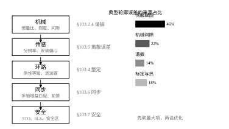
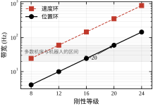
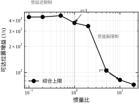
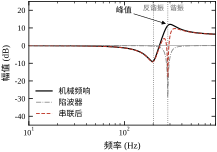
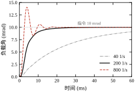
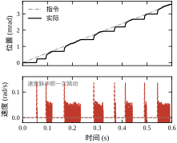
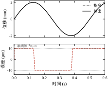
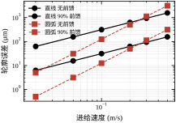
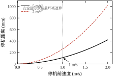
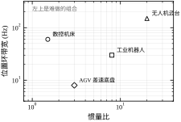

第一个片段来自一台立式加工中心。三轴定位精度全部合格，激光干涉仪打出来 X 轴反向偏差 4 μm、重复性 2 μm，都在机床验收标准之内。但铣削一个 50 mm 的圆，圆度实测 18 μm，而且四个象限点上各有一个小凸起。查了两天，最后发现是 X、Y 两轴的伺服增益不一致：X 轴 45 1/s，Y 轴 36 1/s，调试时分别调得都“手感不错”，合起来走圆弧就露馅。单轴指标合格不等于多轴轨迹合格，这是运动控制落地最常见的一类问题。
第二个片段来自一台六轴协作机器人。静止时关节电机有轻微的嗡嗡声，手摸减速器能感到约 300 Hz 的振动；一加负载就更明显。厂商给的诊断是“增益太高”，把刚性等级从 18 降到 12，声音小了，但节拍慢了 15%，用户不接受。真正的解决办法是测一次频响：机械谐振在 284 Hz，速度环带宽 200 Hz，谐振峰正好落在速度环能够放大的区间里。加一个 284 Hz、Q=5 的陷波器，刚性等级不但不用降，还能升一级。振动不是“增益太高”，是“增益高到了谐振频率上”。
第三个片段来自一台 AGV。厂内测试一切正常，到了客户现场，在一个 8% 的坡道上急停，车尾扫到了货架。事后算：满载 800 kg、1.0 m/s、驱动器的 STO 响应 10 ms、制动减速度按 5 m/s² 标称，理论停机距离 110 mm；但坡道上重力分量吃掉了 1.5 m/s²，实际减速度只有 3.5 m/s²，停机距离变成 153 mm，而安全激光扫描仪设的停车区是按 120 mm 留的。安全距离必须按最坏减速算，不能按标称值算。
三个片段的共同点：算法没错，模型没错，参数单看也都对，问题出在“机械—传感—环路—同步—安全”这五层之间的接缝上。第 102 章讲的是这条链上每个环节的量（分辨率、噪声、惯量、刚度），本章讲这些量怎么在整机上配平，以及配不平的时候现场怎么查。
工程落地的抓手可以归成五层，从下往上（图 103-1）：
排查顺序与层序相反：现象从上面来，原因往下面找。表面是轨迹超差（同步层），先看两轴增益是否一致（环路层）；环路调不动，测频响看谐振（机械层）；谐振压不住，才回头改机械。反过来做——先怀疑机械、拆减速器——是现场最贵的走法。
图 103-1 右侧给了一组典型轮廓误差的来源占比：伺服跟随 46%、机械间隙 22%、谐振 14%、标定与热变形 18%。这四个数的绝对值随机器而变，但排序很稳定：跟随误差永远是第一项，因为它是速度除以增益，任何人都躲不掉。所以改进的顺序也该照这个表来：先加前馈把跟随误差砍掉，再谈间隙和谐振。

很多调试手册把伺服整定写成“调三个环的增益”，这在单轴、刚性负载、低速的场合确实够用。但只要出现下面任一情况，三增益模型就不成立：
这四种情况的共同点是：它们都不是线性时不变环节，用“增益”一个数描述不了。工程上的做法是分层处理：谐振用陷波器（频域）、间隙用双编码器或单向逼近（几何）、摩擦用前馈或抖动（时域）、同步用增益匹配与前馈（协调）。本章后面每一节对应其中一类。
还有一个常被忽略的事实：整定的目标是“在给定机械上把带宽做到最高”，而不是“把增益调到最大”。带宽的上限由三件事共同决定——延迟、谐振、噪声。三者中任何一项到顶，继续加增益只会把裕度吃掉。§103.6 会用三条曲线把这件事画清楚。
主流伺服驱动器都有一个“刚性等级”或“响应等级”参数，从 1 到 31（或 0 到 40），调一个数，位置环增益、速度环增益、积分时间、滤波器一起变。本章沿用这个约定，把它写成
K_p = K_0 \cdot s^{R-10}, \qquad K_0 = 40\ \text{s}^{-1},\quad s = 1.25 \tag{103-1}
其中 R 是刚性等级。R=10 时 K_p=40 1/s，每升一级增益乘 1.25（约 2 dB）。表 103-1 给出五个等级对应的带宽。
表 103-1 刚性等级与两环带宽
| 等级 R | 位置增益 (1/s) | 位置带宽 (Hz) | 速度环带宽 (Hz) | 典型场合 |
|---|---|---|---|---|
| 8 | 25.6 | 4.1 | 24.4 | 皮带传动、长行程 |
| 12 | 62.5 | 9.9 | 59.7 | 普通机器人关节 |
| 16 | 152.6 | 24.3 | 145.7 | 加工中心进给 |
| 20 | 372.5 | 59.3 | 355.7 | 高刚性短行程 |
| 24 | 909.5 | 144.8 | 868.5 | 直驱、无减速器 |
这张表有两个读法。第一，位置带宽总是远低于速度环带宽，本章按 6 倍分离（第 102 章 §102.2.8 讲过理由）；第二，等级的绝对值没有意义，同一台机器上“18 级”和另一台机器上“18 级”可能差三倍，因为 K_0 与电机惯量、编码器分辨率都有关。所以现场交流要说“位置带宽多少赫兹”，不要说“我调到 18 级”。
图 103-2 把这张表画成对数坐标。多数机床与机器人落在 20–60 Hz 的带子里——这个区间不是巧合：低于 20 Hz，跟随误差大到前馈都补不回来；高于 60 Hz，1 ms 采样的延迟就开始吃裕度（第 102 章 §102.6.2）。刚性等级的上限往往是采样周期给的，不是机械给的。

教科书里的伺服是一个线性系统，误差由带宽与输入类型决定。现场多出来的误差有三类，它们都不能用一个 G(s) 表示：
谐振。机械不是刚体，电机与负载之间有一根“弹簧”（轴、减速器、皮带）。这根弹簧把系统变成两质量，出现一个反谐振与一个谐振（本章算例：201 Hz 与 285 Hz）。谐振本身不产生误差，但它让环路在那个频率上“多转了 180°”，一加增益就自激。谐振的害处是通过稳定性体现的，不是通过精度。
间隙。齿轮、丝杠螺母、联轴器都有间隙。换向时，电机先走完间隙，负载才动。这 20 μm 的行程里，控制器以为自己在纠偏，实际上什么也没推动。它的数学形式是滞回，不是线性环节；用描述函数近似只能得到“等效增益下降”这一条结论，相位信息全丢了。
摩擦。库仑摩擦在速度过零处有一个“黏住”区间：力矩小于静摩擦时，负载不动。低速运行时，系统在“黏住—弹开—黏住”之间循环，位移呈阶梯，速度呈脉冲，这就是爬行。它的本质是负阻尼：摩擦随速度下降的斜率（Stribeck 段）把系统的阻尼抵消掉，甚至变成负的。
三类误差的处理手段完全不同：谐振靠频域（陷波、低通、刚度），间隙靠几何（双编码器、单向逼近、预紧），摩擦靠时域（前馈、抖动、低速观测器）。把它们混为一谈——比如用降增益去治间隙——只会让机器变慢而不变准。
两轴联动的轮廓误差不是两轴误差的相加。以 45° 直线插补为例，两轴的跟随误差分别是 e_x=v\cos\theta/K_{px}、e_y=v\sin\theta/K_{py}，而轮廓误差是它们在法向的投影：
e_n = \left| -e_x\sin\theta + e_y\cos\theta \right| \tag{103-2}
增益相等时 e_x=e_y，法向投影为零——两轴都“落后”同样的量，轨迹只是整体滞后，形状不变。增益不等时才出现形状误差，大小与差值成正比。这解释了两个现象：
第一，为什么“每台轴单独验收都合格，联动就不合格”——验收测的是单轴定位，联动看的是轴间一致性； 第二，为什么圆弧的象限点最容易出问题——那里一轴的速度过零、另一轴最大，两轴的动态差异被放大到极值。
本章算例：v=0.2 m/s、K_{px}=40、K_{py}=32，得轮廓误差 625 μm；把两轴都调到 40 并加 90% 速度前馈，降到 62 μm。差 10 倍，全部来自匹配与前馈，与单轴精度无关。
STO（Safe Torque Off）切断的是驱动器的功率级使能，电机不再出力，但不是“立刻停住”：从安全输入动作到力矩真正消失有一段响应时间（典型 5–20 ms），之后靠机械制动或摩擦减速。停机距离由两段组成
d = v\,t_d + \frac{v^2}{2a} \tag{103-3}
其中 t_d 是响应延迟、a 是可用减速度。本章算例 t_d=10 ms、a=5 m/s²：1 m/s 时 d=110 mm；若坡道把 a 吃到 3.5 m/s²，d=153 mm。第二项与 a 成反比，坡道、满载、刹车磨损都会让它变差。
SLS（Safe Limited Speed）不切断力矩，而是把速度限制在一个安全值以下，允许机器在“降速运行”状态下继续工作（比如示教、清扫）。它的关键参数是限速值与被监控的响应时间：限速 250 mm/s、响应 20 ms，则速度超调最多再走 5 mm。
两者不是替代关系：STO 用于“必须停”，SLS 用于“可以慢”。EN ISO 13849 把它们归到不同的性能等级（PL d / PL e），本章不展开标准条文，只讲工程含义：安全功能的设计输入是距离，不是逻辑。先量出机器的实际停机距离，再决定扫描仪的保护半径，顺序反了就会出 §103.1.1 第三个片段那样的事。
本章沿用第 102 章的单轴：电机 2×10⁻⁴ kg·m²、负载 0.02 kg·m²、减速比 10，折算惯量比 r=1；轴刚度 320 N·m/rad，对应 201 Hz 反谐振、285 Hz 谐振；采样 1 ms，环路总延迟 1.5 ms。在这套参数上，本章要回答五个问题：
写作路线与全书一致：先给数学（§103.2），再给流程（§103.3），然后连续（§103.4）与离散（§103.5）两支，接着看稳定性与性能（§103.6），再谈参数（§103.7）与调参（§103.8），最后是改进（§103.9）、落地（§103.10）、边界（§103.11）与代码（§103.12）。
一个提醒：本章的数字都来自 code/ch103_sim.py 的一次实跑，改动任何常数都会变。正文引用数字时都带单位与出处小节，读者可以逐条复算。
把三个片段拼起来看一次完整的翻车过程，比看十条成功经验有用。
某台两轴铣床，加工铝合金，要求圆度 10 μm。调试记录大致如下：
| 天 | 做了什么 | 结果 | 当时的判断 |
|---|---|---|---|
| 1 | X 轴增益从 30 加到 45 | X 轴阶跃变快，无超调 | 良好 |
| 2 | Y 轴增益从 30 加到 36，出现 320 Hz 啸叫，回退到 33 | 啸叫消失 | 认为 Y 轴“体质差” |
| 3 | 试切圆，实测圆度 18 μm，椭圆长轴在 45° | 怀疑丝杠反向间隙 | 拆检丝杠 |
| 4 | 丝杠正常，改为加前馈 K_{vf}=0.8 | 圆度 12 μm | 认为已接近目标 |
| 5 | 提转速（进给从 0.02 提到 0.05 m/s） | 圆度恶化到 31 μm | 认为“高速必然牺牲精度” |
复盘会发现三处判断错误：
第一处，第 2 天的啸叫不是“Y 轴体质差”，是 Y 轴谐振频率低。两侧负载不同（X 拖工作台、Y 拖立柱+滑枕），f_r 差 15% 很正常。正确做法是给 Y 轴单独放陷波，而不是把增益退回去。退增益等于用带宽换稳定，代价是 Y 轴跟随误差比 X 轴大 36%，直接造成 45° 方向的椭圆。
第二处，第 3 天的椭圆方向是信息，不是噪声。轮廓误差在 45° 最大、在 0°/90° 最小，这是典型的两轴增益不等特征（§103.2.7）。若误差在换向点最大、中间平坦，那才是间隙。看误差的角度分布就能区分，不需要拆机。
第三处，第 5 天的结论错了一半。速度提高后轮廓误差确实变大，但主因不是“高速必然牺牲精度”，而是前馈只有 0.8，剩下的 20% 误差随速度线性放大。把前馈提到 0.95 并把两轴增益配平后，同样 0.05 m/s 下圆度回到 14 μm。真正限制高速的是圆弧段的 v^2/R（§103.2.7），直线段并不受这个约束。
这个案例的教训可以压缩成一句：先分清误差的“形状”，再决定动哪个旋钮。形状包括角度分布（增益不等）、速度依赖（前馈不足或 v^2 项）、换向依赖（间隙）、幅值依赖（摩擦）、姿态依赖（惯量比）。五种形状对应五个不同的旋钮，猜错一次就是几天。
这四个词在选型手册与现场对话里经常互换使用，但它们的物理含义完全不同，混用会导致指标定错。
分辨率：能分辨的最小变化量。编码器 19 位、丝杠导程 5 mm、减速比 10，折算到直线端 5/(10\times2^{19})=0.00095 μm——不到 1 nm。这是“看得见多细”，与“做得多准”无关。
重复性：同一指令反复走，落点散布多大。它由间隙、摩擦、热变形决定，通常比分辨率大 3–4 个数量级（本章间隙 20 μm 就是重复性的主要来源）。
精度：落点与真值的偏差。它包含重复性，还包含标定误差、螺距误差、阿贝误差。精度 ≥ 重复性，永远不可能反过来。
带宽：闭环幅频 −3 dB 点。它决定“跟得多快”，与上面三个都不同维度。带宽 60 Hz 的轴可以有 1 μm 的重复性，也可以有 20 μm 的重复性，取决于机械。
四者的关系可以写成一个不等式：
\text{精度} \ge \text{重复性} \ge \text{分辨率}
而带宽与它们不在一条链上：带宽高不等于精度高（可能只是噪声大），精度高也不等于带宽高（可能只是机械好、控制器很软）。
现场最典型的错误指标是“定位精度 ±1 μm”，问下去发现是“重复性 ±1 μm”，真正的精度没测过。验收时必须区分：重复性用同一程序走 30 次统计，精度用激光干涉仪逐点比对。两者测法不同，不能互相代替。
把电机转子与负载各看成一个惯量，中间用一根扭转弹簧与阻尼连接。以电机转矩 T 为输入、电机角速度 \omega_m 为输出，传函是
G_m(s) = \frac{J_l s^2 + c s + k}{s\left(J_m J_l s^2 + c(J_m+J_l)s + k(J_m+J_l)\right)} \tag{103-4}
其中 J_m、J_l 是两侧惯量（J_l 已按减速比折算），k 是轴刚度，c 是轴阻尼。低频时它退化成 \frac{1}{(J_m+J_l)s}，也就是“两个惯量抱在一起转”；高频时分子分母的 s^2 项占优，退化成 \frac{1}{J_m s}，只剩电机自己在动——负载被弹簧“甩开”了。两个渐近线之间的过渡区，就是谐振区。
本章参数：J_m=2\times10^{-4}、J_l=2\times10^{-4}（r=1）、k=320 N·m/rad、c=0.05 N·m·s/rad。代入得反谐振 201 Hz、谐振 285 Hz，与 report() 的输出一致。
令分子、分母的实部分别为零，得到两个特征频率
\omega_a = \sqrt{\frac{k}{J_l}}, \qquad \omega_r = \omega_a\sqrt{1+\frac{J_l}{J_m}} \tag{103-5}
\omega_a 是反谐振（分子零点），\omega_r 是谐振（分母极点）。两者的比值只由惯量比决定：
\frac{\omega_r}{\omega_a} = \sqrt{1+\frac{1}{r}} \tag{103-6}
r=1 时比值 1.414（201→285 Hz），r=10 时只有 1.05——惯量比越大，两个频率越挤在一起，陷波器越难只压一个不伤另一个。这是大惯量比系统难调的深层原因，比“惯量大不好控”这句经验之谈具体得多。
谐振峰的尖锐程度由阻尼决定。品质因数近似
Q_r \approx \frac{J_l\,\omega_r}{c} \tag{103-7}
本章 Q_r\approx 7，即 17 dB 的峰。这个数很关键：它决定了陷波器至少要有 17 dB 的深度，也决定了速度环增益在谐振频率处必须被压到多低。
位置环的开环传函写成
L(s) = \frac{K_p}{s}\cdot\frac{\omega_v}{s+\omega_v}\cdot G_m(s)\,e^{-sT_d} \tag{103-8}
三项分别是积分、速度环一阶近似、机械与延迟。稳定性由三个指标共同约束：
第三条常被漏掉。前两条只看穿越点，而两质量系统在谐振区可能出现第二个 0 dB 穿越：第一个穿越点裕度很好，系统却在谐振频率上自激。本章 max_gain() 把三条一起作为约束，取最小值。
二阶陷波的传函是
H(s) = \frac{s^2 + \dfrac{\omega_0}{Q}g\,s + \omega_0^2}{s^2 + \dfrac{\omega_0}{Q}s + \omega_0^2}, \qquad g = 10^{D/20} \tag{103-9}
D 是中心衰减（dB，取负值），Q 是品质因数。Q 越大，坑越窄、对旁边频率的相位伤害越小，但频率一漂就压不住；Q 越小，坑越宽、鲁棒，但会把附近的真实信号一起衰减，相位代价也大。
工程上的取值规则：Q 取谐振峰的 Q_r 的 1–2 倍，深度取峰高的 1.5 倍。本章 Q_r\approx7、峰高 17 dB，于是 Q=5\sim10、D=-25\sim-30 dB。图 103-4 画的是 Q=5、D=-30 dB 的效果：285 Hz 处从 +17 dB 压到 -13 dB，而 100 Hz 以下几乎不动。
一个必须记住的边界：陷波器只能压一个频率。如果机械有两个谐振（比如减速器一阶 + 结构一阶），要么用两个陷波串联，要么先改机械——两个陷波串起来在中间频段的相位代价会叠加，往往把裕度吃光。
摩擦的工程模型写成速度的函数：
F(v) = \left[F_c + (F_s-F_c)\,e^{-(v/v_s)^2} + B|v|\right]\operatorname{sgn}(v) \tag{103-10}
F_s 是静摩擦、F_c 是库仑摩擦、v_s 是 Stribeck 速度、B 是粘性系数。v=0 处多值（静摩擦可以取 [-F_s,F_s] 之间任何值），这正是“黏住”的数学表达。
在 |v|<v_s 的区间，F(v) 随速度下降，斜率 \mathrm{d}F/\mathrm{d}v<0。把负斜率折算成阻尼，系统的等效阻尼变成 c_{\text{eff}}=c+\mathrm{d}F/\mathrm{d}v，可以为负。负阻尼意味着任何微小扰动都被放大——这就是爬行的线性解释。
本章参数 F_s=0.20、F_c=0.14 N·m、v_s=0.01 rad/s、B=2\times10^{-3} N·m·s/rad。折算到丝杠端（导程 5 mm、减速比 10），静摩擦相当于 0.02 N·m 的电机力矩，很小；但在 0.006 rad/s 这样的低速下，它足以让系统每隔几十毫秒才“跳”一次（§103.6.4）。
设间隙总量为 b，电机侧位移 x_m、负载侧位移 x_l，则
x_l = \begin{cases} x_m - b/2, & \text{正向且已贴合} \\ x_l^{\text{old}}, & |x_m - x_l| < b/2 \\ x_m + b/2, & \text{反向且已贴合} \end{cases} \tag{103-11}
中间那行是关键：电机在间隙里走，负载不动。所以间隙不是“误差等于 b”，而是“误差在 \pm b/2 之间保持，直到换向”。本章 b=20 μm，实测（图 103-7）误差峰正好 10 μm = 半间隙，形状是方波式的平台。
用描述函数近似，间隙的等效增益是幅值 A 的函数：
N(A) = \frac{1}{\pi}\left[\frac{\pi}{2}+\arcsin\left(1-\frac{b}{A}\right) +2\left(1-\frac{b}{A}\right)\sqrt{\frac{b}{A}\left(2-\frac{b}{A}\right)}\right] \tag{103-12}
A\gg b 时 N\to1（大行程下间隙可忽略），A\to b 时 N\to0（小振幅下几乎传不过去）。这解释了为什么“小圆比大圆难铣”：同样的间隙，小圆的指令幅值接近间隙，等效增益掉得厉害。
圆弧插补时，每轴都要提供向心加速度 a=v^2/R。位置环为一阶（含积分器）的系统，对加速度输入的稳态误差是
\Delta R = \frac{v^2}{R\,K_p^2} \tag{103-13}
本章 R=50 mm、K_p=40 1/s：v=0.1 m/s 时 \Delta R=125 μm，v=0.3 时 1125 μm，v=0.5 时 3125 μm。误差与速度平方成正比，与半径成反比——这就是高速小圆最难做的原因。加 90% 速度前馈后剩 1/10，即 12.5/112.5/312.5 μm。
对比式 (103-2) 的直线情形：直线的误差与 v 成正比，圆弧与 v^2 成正比。所以同样的机器，铣直线合格、铣圆弧可能超差，验收时必须分别测。
式 (103-3) 是最简形式。工程上还要加三项修正：
d = v\,t_d + \frac{v^2}{2a} + v\,t_s + d_0 \tag{103-14}
t_s 是安全监控本身的响应时间（SLS 的滤波与判断，典型 20–50 ms），d_0 是测量不确定度与机械余量（典型 20–50 mm）。第一、三项都是“延迟段匀速”，可以合并成 v(t_d+t_s)。
坡道的影响体现在 a 上：a_{\text{eff}}=a_{\text{brake}}-g\sin\phi。8% 坡道对应 \sin\phi\approx0.08，g\sin\phi\approx0.78 m/s²；若标称制动 5 m/s²，实际 4.2，1 m/s 时第二项从 100 mm 涨到 119 mm。看起来只差 19 mm，但安全区就是按这个数划的。
多个独立误差源合成时，有两种算法：
e_{\text{rss}}=\sqrt{\sum_i e_i^2}, \qquad e_{\text{wc}}=\sum_i |e_i| \tag{103-15}
RSS 假设各误差独立、随机、均值为零；最坏和假设它们同时取极值。工程上的惯例是：精度验收用 RSS，安全距离用最坏和，功能安全认证用最坏和。理由很直接——精度偶尔超差可以返修，安全距离偶尔不够就是事故。
本章的定位误差预算（第 102 章 §102.3.7 已算过）是 2.236 μm（RSS）对 3.031 μm（最坏和），两者差 36%。写进图纸的应是 RSS，写进安全评估的应是最坏和。
两质量模型把传动链压成“电机—弹簧—负载”三段。真实链条至少四段：电机—联轴器—丝杠—工作台，于是有两根弹簧、三个惯量。写成矩阵形式：
\boldsymbol{J}\ddot{\boldsymbol{\theta}}+\boldsymbol{K}\boldsymbol{\theta}=\boldsymbol{T},\qquad \boldsymbol{K}=\begin{bmatrix}k_1&-k_1&0\\-k_1&k_1+k_2&-k_2\\0&-k_2&k_2\end{bmatrix} \tag{103-16}
无阻尼自由振动的频率由广义特征值问题 \det(\boldsymbol{K}-\omega^2\boldsymbol{J})=0 给出。三个惯量、两根弹簧，除了 \omega=0（整体转动）之外有两个非零解。
取本章的量级：三个惯量都折算成 2\times10^{-4} kg·m²，两段刚度都是 320 N·m/rad，解出来是 201.3 Hz 与 348.7 Hz。第二个峰正好是第一个的 \sqrt3 倍——这不是巧合：三段等惯量、两段等刚度的链，模态频率就是 \sqrt{k/J} 与 \sqrt{3k/J}。
这个结果解释了两件事：
第一，两质量模型给的是“最低那个峰”。本章的两质量模型只有 201 Hz 反谐振、285 Hz 谐振（r=1 时），而三质量链的最低模态正好也是 201 Hz。所以只要第二个峰足够低（低于 −10 dB），两质量近似就够用。
第二，第二个峰的位置由“最软的那一段”决定。若联轴器比丝杠软得多（k_1\ll k_2），第二个峰会被推到很高，接近 \sqrt{k_2/J_3}，超过带宽，不用管；反之若两者相当，两个峰都在带宽附近，就必须双陷波。
工程上的判据是刚度比：
\kappa=\frac{k_2}{k_1} \tag{103-17}
\kappa>4 时两峰分离明显，可分别处理；\kappa\approx1 时两峰靠近，陷波器会互相干扰（一个坑挖在另一个坑的上升沿），这时优先改机械——换刚性联轴器把 k_1 提上去，比加第二个陷波便宜。
§103.2.5 说摩擦的负斜率会引发爬行，但只说了“会”，没说“多大”。描述函数法能给幅值的一阶估计。
思路是把非线性环节用“等效增益”代替。对 Stribeck 摩擦，输入是速度 v=A\sin\omega t，输出是摩擦力，取基波分量与输入的比值：
N(A)=\frac{1}{\pi A}\int_0^{2\pi}F(A\sin\psi)\sin\psi\,\mathrm{d}\psi \tag{103-18}
在 A\ll v_s 时，摩擦几乎全在负斜率段，N(A)\approx\mathrm{d}F/\mathrm{d}v<0——等效增益是负的。这正是“负阻尼”的来源。
极限环的条件是新系统的特征方程有纯虚根：
1+K_pG(j\omega)N(A)=0 \quad\Longleftrightarrow\quad G(j\omega)=-\frac{1}{K_pN(A)} \tag{103-19} 左边是机械频响，右边是一个正实数（因为 N<0）。于是图解法很直接：在 Nyquist 图上找机械曲线与负实轴的交点，令交点幅值等于 1/(K_p|N(A)|)，解出 A。
三条结论：
描述函数法的局限也要说清楚：它只取基波，忽略谐波，所以给出的幅值误差常在 20%–30%；它也不能给出波形。本章时域仿真（图 103-6）给出的速度峰是 0.1362 rad/s、粘住比例 62%，这两个量描述函数都算不出来——它的价值在“判断有没有、量级多大”，不在“画出波形”。
§103.2.4 给了陷波的传函，但没算它的相位。这一步不能省，因为陷波能在幅值上压 30 dB，相位上却可能“借”走 70°。
把 s=j\omega 代入，记 x=\omega/\omega_0，则
H(j\omega)=\frac{(1-x^2)+jxg/Q}{(1-x^2)+jx/Q}
中心频率处 x=1，分子分母都是纯虚数，相位相同，相位为零——坑底反而是相位最干净的地方。
坑边不是。取本章的 Q=5、D=-30 dB（g=0.0316），逐点算相位：
表 陷波器在不同频率处的相位（Q=5，−30 dB）
| x=\omega/\omega_0 | 0.5 | 0.8 | 0.9 | 0.95 | 0.982 | 1.0 |
|---|---|---|---|---|---|---|
| 相位（°） | −7 | −23 | −42 | −59 | −70 | 0 |
最大滞后 70° 出现在 x=0.982，即中心频率下方 1.8%。换算成本章的数：0.982\times285=280 Hz。
这张表解释了两条现场经验：
第一，“陷波放上去，增益反而调不高了”。若穿越频率离陷波中心不到 2 倍（本章 285 Hz 的一半是 142 Hz），陷波的相位滞后会直接吃掉裕度。所以陷波频率必须高于穿越频率 3 倍以上；本章穿越约 32 Hz，285/32≈9，安全。
第二，“陷波要窄”。最大滞后与深度、Q 都无关，都在 70° 左右；Q 决定的是它集中在多窄的频段。x=0.5 处，Q=5 滞后 7.4°，Q=10 只有 3.7°——差一倍。所以窄陷波对远离中心频率的相位更友好，但它对频率漂移更敏感：温度一变谐振移 3%，坑就偏了。Q=5 是常见折中。
还有一个容易忽略的点：相位在中心频率两侧反号。x<1 是滞后，x>1 是超前，大小对称。这意味着陷波会把谐振峰“劈”成两半：一半被滞后推得更不稳，一半被超前拉稳。若谐振频率正好落在别的位置（比如有两个峰靠得近），这种“一半帮忙一半添乱”的效果会让双陷波的设计变复杂——这也是 §103.2.10 建议先改机械的原因。
整机调试的顺序不能凭感觉。表 103-2 是本章推荐的七步，前两步在办公室就能做完，第三、四步必须在现场。
表 103-2 运动控制落地的七步
| 步 | 做什么 | 输入 | 输出 | 不合格怎么办 |
|---|---|---|---|---|
| 1 | 机械核查 | 图纸、称重 | 惯量比、刚度、间隙 | 改机械或降指标 |
| 2 | 定目标带宽 | 节拍、精度 | 位置带宽下限 | 换电机/减速比 |
| 3 | 初选刚性等级 | 表 103-1 | K_p | — |
| 4 | 测频响、放陷波 | 扫频仪 | 陷波参数 | 改结构刚度 |
| 5 | 加前馈、配同步 | 圆度仪 | 前馈增益、轴间差 | 改插补策略 |
| 6 | 摩擦与间隙补偿 | 低速爬行数据 | 补偿表 | 双编码器 |
| 7 | 安全功能与验收 | 激光尺、秒表 | 停机距离、报告 | 改安全区 |
这七步的顺序有两个硬约束。第一，第 1 步不做完不进第 3 步——惯量比 20 的机器，怎么调都调不出 50 Hz，先调只会浪费时间。第二，第 4 步必须在第 5 步之前——谐振没压住就加前馈，前馈的加速度分量会把谐振激得更凶。
机械核查只关心四个数：
四个数里，惯量比最容易算错。常见的错法是漏掉减速比平方：负载 0.02 kg·m²、减速比 10、电机 2×10⁻⁴，直接比是 100，看起来灾难；折算后是 1，完全正常。减速比把惯量按平方缩小，这是它最重要的作用，比“放大转矩”更值钱（第 102 章 §102.2.7）。
目标带宽从节拍与精度反推。跟随误差 e=v/K_p，要 e\le e_{\text{allow}}，则 K_p\ge v/e_{\text{allow}}。本章算例：v=0.2 m/s、允许 5 mm（无前馈），得 K_p\ge40 1/s；若要求 0.5 mm，K_p\ge400——这时候必须加前馈，因为 400 1/s 已经接近机械上限。
机械上限由惯量比决定。表 103-3 是 max_gain() 在同一套机械参数下扫出来的结果，三个约束（PM、GM、谐振峰）一起生效。
表 103-3 惯量比与可达位置增益
| 惯量比 r | 可达 K_p (1/s) | 幅值裕度 (dB) | 限制来源 |
|---|---|---|---|
| 0.1 | 436.5 | 6.0 | 延迟 |
| 0.5 | 453.7 | 6.0 | 延迟 |
| 1.0 | 373.3 | 8.8 | 延迟与谐振 |
| 5.0 | 105.0 | 6.0 | 谐振 |
| 10.0 | 81.9 | 6.0 | 谐振 |
这张表最有价值的信息是限制来源的切换：r\le0.5 时，增益被 1.5 ms 的延迟卡住，再怎么改机械也没用；r\ge1 之后，限制逐渐转到谐振，r=10 时只剩 82 1/s。图 103-3 把这条曲线画出来，左侧平坦、右侧陡降，转折点在 r\approx1。
工程含义：惯量比在 1–3 之间时，“降惯量”和“降延迟”的收益差不多；超过 5 之后，降惯量是唯一有效的手段。这也解释了为什么直驱平台（r\approx0.1）能做到 100 Hz 以上，而通过谐波减速器的关节（r=5\sim10）很难超过 30 Hz。

测频响的方法有两种：扫频（给正弦指令、测幅相）和敲击（力锤 + 加速度计）。现场多用第一种，因为不用装传感器：让驱动器工作在速度环、给小幅正弦速度指令，记录转矩指令与实际速度的比值，扫 10 Hz–1 kHz。
得到曲线后按三步走：
一个常见错误是把陷波放在反谐振（201 Hz）而不是谐振（285 Hz）。反谐振是传函的零点，它让幅值下凹、相位上翘，本身不引起不稳定；压它没有意义，还会白白吃掉相位。判断方法很简单：看峰，不看谷。
放完陷波后，max_gain() 的第三项约束解除，位置增益可以往上走一档。本章例子里，K_p 从 200 提到 800，阶跃超调从 0 涨到 40%（图 103-5）——这说明陷波解决的是稳定性，不解决超调，超调要靠降低位置增益或加微分/前馈来管。
前馈解决的是“跟随误差”这一项，它占轮廓误差的 46%（图 103-1）。速度前馈把速度指令直接加到速度环给定上，加速度前馈再加一路。加了前馈之后，跟随误差变成
e = \frac{v(1-K_{vf})}{K_p} + \frac{a(1-K_{af})}{K_p^2} \tag{103-20}
K_{vf}、K_{af} 是前馈比例（0–1）。本章加 90% 速度前馈，直线轮廓误差从 625 μm 降到 62 μm，圆弧从 3125 μm 降到 312 μm。
前馈不是越大越好。K_{vf}>1 会造成过冲，因为前馈通道没有反馈修正；工程上取 0.85–0.95，剩下的 5–15% 留给反馈去修。加速度前馈对谐振特别敏感——它直接把指令的二阶导数送进电流环，如果指令里有高频分量（比如 G 代码的拐角），会把谐振激起来。所以加速度前馈通常只在轨迹平滑（样条插补）时才开。
同步的做法有两层：硬件层用同一个位置指令源（ EtherCAT 分布式时钟，同步误差 <1 μs）；参数层把各轴的 K_p、前馈增益、滤波器配到一致。前者解决“指令不同时到”，后者解决“响应不一样快”。两者缺一不可，但现场出问题更多是后者。
匹配到什么程度算够？由式 (103-2) 反推：允许轮廓误差 e_n、进给速度 v，则两轴增益的相对差应满足
\frac{|\Delta K_p|}{K_p} \le \frac{e_n K_p}{v\cos\theta\sin\theta} \tag{103-21}
本章 v=0.02 m/s、K_p=40、e_n=10 μm、\theta=45°，得相对差 \le4\%。这个数比多数人的直觉严——低速 0.02 m/s 时，4% 的增益差就吃掉了全部 10 μm 预算，10% 的差会到 25 μm。速度提到 0.2 m/s，同样的 4% 就差 100 μm，彻底超标。所以“两轴增益差 5% 以内”这条经验，隐含的前提是“在最高进给速度下验收”。
摩擦补偿的主流做法是库仑前馈：按运动方向加一个等于 F_c 的力矩偏置。它能消掉匀速段的大部分误差，但对换向瞬间的黏滑无能为力——因为那时速度为零，方向判断本身在抖。
更稳的做法是“摩擦观测器”：用指令力矩与实际加速度估出摩擦力，再前馈回去（§103.9.3）。它不需要方向判断，但需要质量/惯量已知。
间隙补偿只有三条路：机械预紧（双螺母、消隙齿轮）、双编码器（负载侧加一个，直接测负载位置）、单向逼近（所有定位都从同一方向到达）。前两条改硬件，第三条改工艺。控制器层面能做的只有“间隙辨识 + 反向时叠加一个 b 的补偿量”，而它依赖间隙稳定——磨损后就失准，需要定期重标。
本章的间隙仿真（图 103-7）给的是“不补偿”的基线：20 μm 间隙、±10 μm 误差平台。补偿后误差能压到 2–3 μm，但换向瞬间仍有一次跳变，因为补偿量是“事后”加的。
安全功能的验收不是看参数，是看距离。步骤：
第 4 步的 1.2 倍不是随手取的：它覆盖坡道、磨损、负载变化的余量。本章式 (103-14) 的三项修正都可以归到这个系数里，但工程上更愿意“先算再加系数”，因为审核时每一项都要能追溯。
SLS 的验收多一项：验证限速真的限住了。做法是给一个超过限速的指令，看实际速度是否被钳在限速值以下，以及超调量与恢复时间。超调量乘响应时间就是额外的安全距离。
表 103-4 是七步在本章参数上的输出。注意第 4 步的结论“陷波 285 Hz、Q=5、-30 dB”，与第 2 步的“目标带宽 30 Hz”是两件事：前者压谐振，后者定增益。
表 103-4 算例的七步输出
| 步 | 输出 | 数值 | 依据 |
|---|---|---|---|
| 1 | 惯量比 | 1.0 | J_l/(N^2J_m) |
| 1 | 谐振 | 201 / 285 Hz | 式 (103-5) |
| 1 | 间隙 | 20 μm | 实测 |
| 2 | 目标带宽 | 30 Hz | v/e 反推 |
| 3 | 位置增益 | 200 1/s | 表 103-1 |
| 4 | 陷波 | 285 Hz, Q=5, -30 dB | 图 103-4 |
| 5 | 前馈 | 90% | 式 (103-20) |
| 5 | 轴间差 | ≤5% | 式 (103-21) |
| 6 | 摩擦补偿 | 0.14 N·m | 式 (103-10) |
| 7 | 停机距离 | 110 mm（1 m/s） | 式 (103-14) |
这套参数下，单轴阶跃（K_p=200）无超调、60 ms 内到位；两轴联动在 0.02 m/s 时轮廓误差 62 μm，0.2 m/s 时 625 μm。后者超标，说明这台机器的额定进给应定在 0.05 m/s 左右，或者必须开前馈。
先调增益后测谐振。现象：调到某一级开始嗡嗡响，降一级就好，于是认定“这级是极限”。实际上谐振在 285 Hz，只要放一个陷波就能再上两级。顺序颠倒的代价是永久损失 30% 的带宽。
先加前馈后压谐振。现象：加前馈后振动变大，以为前馈有问题。实际上前馈的加速度分量在谐振频率上有能量，把原本临界稳定的模态推过了界线。正确顺序是先陷波、后前馈。
先定安全区后测停机距离。现象：验收时发现按图纸划的安全区比实测停机距离小。这时改安全区要改布局、改程序、重新认证，代价远大于先测后划。
三个例子的共同结构：后一步依赖前一步的输出，颠倒之后得到的不是“差一点”的结果，而是“错方向”的结果。这也是 §103.3.1 把七步写成固定表的原因。
七步走完，必须留下一张表。没有这张表，参数就是“调试员脑子里的东西”，人一走、机器一修，全部归零。表的内容分四块：
第一块，机械状态。电机型号、编码器位数、减速比、丝杠导程、联轴器型号与刚度、导轨类型与润滑、各轴移动质量。这些是“为什么这组参数成立”的物理前提。
第二块，辨识结果。每轴的 J_m、J_l、r、f_a、f_r、谐振峰高度、Q，以及测量条件（姿态、负载、温度）。辨识结果必须带条件，否则半年后没法比对。
第三块，控制参数。K_p、速度环增益与积分、滤波器截止频率、陷波（频率、深度、Q）、前馈系数、摩擦补偿表、间隙补偿量。此外还要记录限制原因：这一组参数是被相位裕度卡住，还是被谐振峰卡住。
第四块，验证数据。阶跃的超调与调节时间、正弦跟随的最大误差、圆弧的圆度、满载温升、STO 停机距离。每项都要有测法与仪器，不能只写数值。
四块里最容易被省略的是“限制原因”和“测量条件”，而这两项恰恰是后续维护最需要的。举个具体例子：同一台机器，记录“K_p=200，受谐振峰限制”，半年后有人想提节拍，一看就知道要先加陷波；若只记“K_p=200”，他只会往上试，试到 250 振了，再退回来，白折腾一天。
记录表的格式不必复杂，一张 A4 足够，但必须跟机器走：贴在电柜门内侧，或者存进驱动器的参数文件里。纸质版容易被油污糊掉，电子版容易随电脑换代丢失——最好是两份都有。
设计常从工艺指标出发：“圆度 10 μm、进给 0.05 m/s”。把它翻译成控制器参数，会得到一个让人不舒服的结论。
匀速段的跟随误差是 e=v/K_p。要 e\le10 μm、v=0.05 m/s，得
K_p\ge\frac{v}{e}=\frac{0.05}{10^{-5}}=5000\ \text{1/s}
5000 1/s 是什么概念？本章表 103-6 里，惯量比 0.1 时可达增益才 437 1/s。差一个数量级，物理上做不到。
圆弧稍好一点，因为误差按 1/K_p^2 下降。半径 R 的圆弧，误差近似 v^2/(RK_p^2)（式 103-13）。v=0.5 m/s、R=0.05 m、要 10 μm：
K_p\ge\frac{v}{\sqrt{R\cdot e}}=\frac{0.5}{\sqrt{0.05\times10^{-5}}}=707\ \text{1/s}
仍是可达值的两倍。三条出路，只有一条是“调参”。以直线 0.05 m/s 的 10 μm 指标为例：
| 出路 | 做法 | 本章算例下的效果 |
|---|---|---|
| 提高增益 | 加到可达上限 373 1/s | 误差仍 134 μm |
| 加前馈 | K_{vf} 提到 0.99 | 误差降到 12.5 μm |
| 降速 | v 降到 0.0005 m/s | 误差 12.5 μm，节拍慢 100 倍 |
加前馈的账最划算。把 e=v(1-K_{vf})/K_p 反解：要 10 μm，K_p=40、v=0.05 时
1-K_{vf}=\frac{eK_p}{v}=\frac{10^{-5}\times40}{0.05}=0.008 \quad\Longrightarrow\quad K_{vf}=0.992
前馈要到 99.2%。这就是为什么高端机床的前馈标定要用激光干涉仪逐段做，而不是“填个 0.9 试试”。前馈差 1%，误差就翻一倍多——它是个“精度放大器”，把标定误差按 v/K_p 放大。
反推的意义不在于“算出该填多少”，而在于判断指标是否现实。若反推值远超可达增益，说明这个工艺指标必须靠前馈、靠降速或靠改结构，而不是靠“再调调”。这一判断在报价阶段就该做出来，否则验收时才发现做不到，返工成本高一个量级。
七步里的第一步是“把机械写成四个数”，但那四个数是从图纸和铭牌上抄来的。抄完还得在现场验三项，验不过就不要往下走——这三项的任何一项不合格，后面的调参都是在给机械问题打补丁。
第一项，背隙。 千分表顶住工作台，指令 +0.1 mm 再 −0.1 mm，读回差值。丝杠加联轴器结构正常应在 5 μm 以内；超过 20 μm，说明联轴器松动、丝杠预紧不足或螺母磨损。背隙的危害不只是“反向时差一点”：它是 §103.2.6 的滞回环，会让位置环在换向后的一个背隙宽度内“空走”——电机在转、负载不动，回路在这个区间里等于断开，表现为“换向过切”。这段空走靠调参补不回来，只能靠机械预紧或双编码器。
第二项，低速爬行。 指令 1 mm/min 匀速走 50 mm，用千分表或激光干涉仪看位移曲线。正常是一条斜线叠加几微米噪声；异常是“台阶状”——每走十几微米停一下。这是 §103.2.5 的 Stribeck 负阻尼在起作用，根源在导轨润滑与预紧。此时若去提速度环增益，只会让台阶变成尖叫。
第三项，反馈分辨率。 按编码器位数与传动比算一遍最小分辨：
| 编码器 | 每转计数（×4 后） | 5 mm 导程下的分辨 | 评价 |
|---|---|---|---|
| 17 位 | 524 288 | 9.5 nm | 够用 |
| 20 位 | 4 194 304 | 1.19 nm | 远优于机械 |
| 23 位 | 33 554 432 | 0.15 nm | 已被机械噪声淹没 |
表里最后一列是关键：分辨率低于机械噪声水平之后，再高的位数也换不来精度，只换来更大的速度噪声（§103.5.8 的反向约束）。反过来看，17 位编码器在 5 mm 导程上给出 9.5 nm，而本章算例的跟随误差是 125 μm——分辨率比误差小四个数量级，根本不是瓶颈。所以“精度不够就换高分辨率编码器”这句话，多数时候是找错了方向。
三项体检一共花不到两小时，却能避免一类最典型的浪费：把机械问题当控制问题调，调了三天，最后发现是联轴器键槽松了。判断方法很简单——调参能改善的现象，一定是“跟着参数单调变化”的；如果某个抖动怎么调都在，且频率不随 K_p 变，那它大概率不在控制器里。
连续域里，整机可以拆成三个闭环传函，分别回答三个问题：
跟随：位置指令到实际位置，
T(s) = \frac{L(s)}{1+L(s)} \tag{103-22}
它决定跟随误差与超调，带宽就是 |T(j\omega)| 降到 -3 dB 的频率。
扰动抑制：负载扰动到实际位置，
S(s) = \frac{1}{1+L(s)} \tag{103-23}
它决定“外力推一下，机器偏多少”。低频 |S|\approx\omega/K_p，所以刚度就是位置增益——这也是“刚性等级”这个名字的来源。
噪声传递：编码器噪声到电机转矩，
T_n(s) = \frac{C(s)}{1+L(s)} \tag{103-24}
C(s) 是控制器。这条通道决定“增益能开多高”：K_p 越大，|S| 越小，扰动抑制越好，但噪声放大越厉害，电流环开始“叫”。
三个传函里，S 与 T 互补（S+T=1），所以不可能同时把跟随与扰动抑制都做好——这是反馈的固有 trade-off，任何整定方法都绕不开。工程上的做法是把带宽定在“够用”的位置，剩下的差距用前馈补（前馈不影响 S）。
图 103-4 是本章机械的频响：201 Hz 处幅值下凹（反谐振），285 Hz 处幅值上凸 17 dB（谐振）。更危险的是相位：从 201 Hz 到 285 Hz，相位从 0° 掉到 -180°，中间只隔 84 Hz。
这道“相位崖”是两质量的本质。单质量系统的相位最多 -90°；两质量在谐振段多出 -180°，加上积分器的 -90° 和延迟的负相位，很容易凑够 -180° 的临界条件。所以加增益时，穿越频率一旦逼近反谐振，裕度会断崖式下降，而不是缓慢减小。
本章 r=1 时，\omega_r/\omega_a=1.414，崖宽 84 Hz；r=10 时比值 1.05，崖宽只有十几赫兹——大惯量比系统的裕度对增益极其敏感，多 1 dB 就可能从稳定跳到振荡，这正是表 103-3 里 r=10 只剩 82 1/s 的原因。

陷波器在中心频率处提供 -30 dB，但在中心频率以下会带来相位滞后。Q=5、中心 285 Hz 时，100 Hz 处约 4°，200 Hz 处约 12°，285 Hz 处 0°（对称），400 Hz 处 +12°。
这个相位分布有两个后果：
第一，陷波会吃掉一点相位裕度。本章 K_p=200 时穿越频率约 32 Hz，那里陷波只贡献 1°，可以忽略；但如果带宽提到 100 Hz，陷波的 4° 就要计入预算。
第二，陷波在中心频率以上提供相位超前，看起来是好事，但那段频率的幅值也被衰减了，等于人为降低了高频增益。对稳定性无害，对噪声抑制有利，对快速性无影响。
所以工程上有个反直觉的结论：陷波器“越窄越好”（Q 越大），只要频率不漂。窄陷波只在很窄的带内挖坑，对旁边频率的相位与幅值几乎无影响。它的问题不是相位，是鲁棒性——温度、磨损、负载变化都会让谐振频率漂移，Q=20 的陷波漂 5% 就完全失效。Q=5 是“够窄”与“够稳”的折中。
摩擦是非线性的，但在某个工作点附近可以线性化。在 v_0>0 处展开式 (103-10)：
F(v) \approx F(v_0) + \left.\frac{\mathrm{d}F}{\mathrm{d}v}\right|_{v_0}(v-v_0) \tag{103-25}
斜率在 v_0<v_s 时为负，量级
\left.\frac{\mathrm{d}F}{\mathrm{d}v}\right|_{v_0\ll v_s} \approx -\frac{2(F_s-F_c)}{v_s} \tag{103-26}
本章 (F_s-F_c)=0.06 N·m、v_s=0.01 rad/s，斜率约 -12 N·m·s/rad。而轴的阻尼只有 0.05——负阻尼是正阻尼的 240 倍。这就是为什么低速时系统必然爬行：等效阻尼为负，任何扰动都被放大，直到非线性把振幅限制住，形成极限环。
用描述函数法可以估极限环的频率与幅值：极限环发生在“负阻尼提供的能量 = 正阻尼消耗的能量”处。工程上不追求精确预测，只用一个判据：当 K_p v_{\text{cmd}} < F_s 时，系统必然进入黏滑。本章 K_p=600、v=0.006，乘积 3.6 N·m，远大于 F_s=0.2，按理不该爬行；但仿真里仍然爬行（图 103-6），原因是速度环的积分器在黏住期间持续累积，一旦弹开就冲过头。这说明判据只对“纯比例”控制成立，带积分时要另算。
图 103-6 是本章的爬行仿真：指令 0.006 rad/s，实际位移呈阶梯，速度呈脉冲（峰值 0.136 rad/s，是指令的 23 倍），62% 的时间处于黏住状态。平均速度是对的，瞬时速度完全不对——这就是为什么“低速平稳性”不能用平均速度验收。
式 (103-12) 的描述函数把间隙折成一个随幅值变化的增益。把它代进开环，得到“等效开环增益” N(A)K_p。取本章参数 b=20 μm：
这就是“小圆难铣”的定量解释：圆半径 25 μm 时，指令幅值正好等于间隙，等效增益掉一半，跟随误差翻倍。工程上遇到“小圆弧总是超差”，先查间隙，比调增益有效。
描述函数的局限也很明显：它假设输入是正弦、只保留基波，对“换向瞬间的跳变”无能为力。所以它能解释稳态，不能预测瞬态——瞬态要看时域仿真（图 103-7）。
把两轴都写成式 (103-22) 的一阶闭环，输入是同一个插补器给出的 x(t)、y(t)。轮廓误差的法向分量可以写成两轴传函之差作用在轨迹上的结果：
e_n(s) = \left[T_x(s)-T_y(s)\right]\cdot\frac{x(s)\cos\theta+y(s)\sin\theta}{1} \tag{103-27}
对匀速直线，T_x-T_y 在低频近似为 (K_{py}-K_{px})/(s+K_p)^2，代回去就得到式 (103-2)。对圆弧，两轴的输入是正弦（频率 \omega=v/R），于是
e_n \approx v^2\left|\frac{1}{K_{px}^2}-\frac{1}{K_{py}^2}\right|\Big/ R \tag{103-28}
本章 K_{px}=40、K_{py}=32、v=0.2 m/s、R=0.05 m，得 e_n\approx0.28 mm——比直线情形（625 μm）小一半。但要注意两者的标度不同：直线误差随 v 线性长，圆弧误差随 v^2 长。v=0.5 m/s 时，圆弧到 1.76 mm，直线只有 1.56 mm，圆弧反超。低速时直线误差占主导，高速时圆弧误差占主导，拐点大约在 v\approx0.3 m/s。
这一节的模型能解释四件事：跟随误差随速度线性增长、圆弧误差随速度平方增长、谐振让裕度断崖、间隙让小振幅等效增益下降。它解释不了三件事：
所以连续模型的作用是“定架构、定量级”，不是“算波形”。工程上的用法：先用连续模型算出带宽、增益、陷波参数，再用离散仿真验证，最后现场微调。三步缺一不可，但顺序不能反。
前面的传函写法便于看频响，但要看“模态衰减多快”，状态空间更直接。取状态 \boldsymbol{x}=[\theta_m,\omega_m,\theta_l,\omega_l]^T，输入转矩 T：
\dot{\boldsymbol{x}}= \begin{bmatrix} 0&1&0&0\\ -\frac{k}{J_m}&-\frac{c}{J_m}&\frac{k}{J_m}&\frac{c}{J_m}\\ 0&0&0&1\\ \frac{k}{J_l}&\frac{c}{J_l}&-\frac{k}{J_l}&-\frac{c}{J_l} \end{bmatrix}\boldsymbol{x}+ \begin{bmatrix}0\\ \frac{1}{J_m}\\0\\0\end{bmatrix}T \tag{103-29}
这个矩阵有一个零特征值（整体转动，无回复力），另外两个共轭复根描述相对振动。把两式相减，令 \delta=\theta_m-\theta_l，得到一维方程：
\ddot\delta+\frac{c(J_m+J_l)}{J_mJ_l}\dot\delta+\frac{k(J_m+J_l)}{J_mJ_l}\delta=0 \tag{103-30}
于是模态参数有闭式：
\omega_n=\sqrt{\frac{k(J_m+J_l)}{J_mJ_l}},\qquad \zeta=\frac{c}{2}\sqrt{\frac{J_m+J_l}{kJ_mJ_l}} \tag{103-31}
代入本章数值（J_m=J_l=2\times10^{-4}、k=320、c=0.05）：\omega_n=1789 rad/s，即 284.7 Hz，与 resonance() 给的 f_r 完全一致；\zeta=0.14。
这个 \zeta 是模态阻尼比，描述振动衰减多快：包络按 e^{-\zeta\omega_n t} 衰减，时间常数 1/(\zeta\omega_n)=4 ms。也就是说，振一下要 4 ms 才衰到 37%，12 ms 才衰到 5%——正好是位置环 1 ms 采样周期的十几倍。这就是“振动一旦激起，要好几个控制周期才消”的定量解释。
要注意 \zeta 与前面用的 Q=J_l\omega_r/c\approx7 不是同一个量：\zeta 描述模态衰减，Q 描述频响峰高，两者在纯二阶系统里满足 Q=1/(2\zeta)，而两质量系统的峰值还受振型参与系数影响，所以 1/(2\zeta)=3.6 与 Q=7 并不矛盾——电机侧的峰值比负载侧更尖。
状态空间写法的另一个好处是可以直接推广到多质量：把 \boldsymbol J、\boldsymbol K 扩成 n\times n，特征值就是各阶模态，见 §103.2.10。这也是为什么工程上用有限元算模态，而不是一条一条手推传函。
频域给了 T_x-T_y 的表达式，但不直观。直接在时域推一遍，能看清“为什么椭圆长轴在 45°”。
两轴都是一阶闭环，稳态跟随误差等于速度除以增益：
e_x=\frac{v\cos\theta}{K_{px}},\qquad e_y=\frac{v\sin\theta}{K_{py}}
轮廓误差是误差向量在轨迹法向上的投影。45° 直线的法向是 (-\sin\theta,\cos\theta)，于是
e_n=-e_x\sin\theta+e_y\cos\theta =\frac{v\sin\theta\cos\theta}{K_{py}}-\frac{v\sin\theta\cos\theta}{K_{px}} =\frac{v\sin2\theta}{2}\left(\frac{1}{K_{py}}-\frac{1}{K_{px}}\right)
这个式子只有三项：速度、角度因子、增益倒数差。逐项看：
速度项：误差与 v 成正比。所以“高速超差”不一定是控制器不行，可能只是这一项放大了。
角度因子 \sin2\theta：在 0° 与 90° 为零，在 45° 最大。这就是椭圆长轴出现在 45° 的原因——沿 X 或 Y 走时，只有一根轴在动，没有“配合误差”；45° 时两轴的误差各贡献一半，方向又正好落在法向上。
增益差项：两轴增益相等时为零。注意是倒数差，不是差值：K_{px}=40、K_{py}=32 与 K_{px}=40、K_{py}=50 的误差不一样大（前者 0.00625，后者 0.005），因为倒数是非线性映射。
代入本章数值（v=0.2 m/s、K_{px}=40、K_{py}=32）：
| \theta | 0° | 15° | 30° | 45° | 60° | 75° | 90° |
|---|---|---|---|---|---|---|---|
| e_n（μm） | 0 | 313 | 541 | 625 | 541 | 313 | 0 |
表里 45° 的 625 μm 与 contour_line() 的输出完全一致（该函数正是按上两式算的），说明“轮廓误差”在这个模型里没有额外的神秘项，就是两个跟随误差的几何投影。
由此还能反解出增益差的容限。令 e_n\le e_{\text{allow}}：
\frac{|\Delta K_p|}{K_p}\le\frac{2e_{\text{allow}}K_p}{v\sin2\theta}
e_{\text{allow}}=10 μm、K_p=40、v=0.02、\theta=45° 时，右边等于 4%——与 §103.3.5 的结论一致。注意这个容限随速度反比缩小：速度提到 0.2 m/s，容限只剩 0.4%。所以“两轴增益差 5% 以内”这条经验，必须配上“最高进给速度”才有意义。
最后提醒一点：以上全是稳态。加减速段的误差由加速度与 K_p^2 决定（式 103-20 的第二项），量级更大，且与角度因子的关系不同。圆弧的加减速段往往才是轮廓误差的最大处，这也是为什么试切件要包含“圆弧接直线”的过渡段。
本章的整套方法建立在“两质量、一个模态”这个假设上。假设错了，算出来的 r、Q、陷波频率都是错的。所以要有办法用实测数据反过来检验假设，而不是默认它成立。
判据一：幅频在谐振后回到 −40 dB/dec。 单质量刚体是 −20 dB/dec；两质量在 f_a 与 f_r 之间斜率变平（反谐振抵消），过 f_r 之后变成 −40 dB/dec。若实测在 f_r 之后仍是 −20 dB/dec，说明看到的不是结构模态，而是别的环节（滤波器、延迟）。
判据二：相位在 f_a 与 f_r 之间有一整段抬升。 反谐振是零点、谐振是极点，两者一正一负，中间那段相位会抬升接近 180^\circ。这段“相位台阶”是两质量最可靠的指纹——它比幅频的峰更不容易被噪声污染。
判据三：f_r/f_a 的比值直接给出惯量比。 由式 (103-7)，
r=\left(\frac{f_r}{f_a}\right)^2-1 \tag{103-32}
这个式子的价值在于它不需要知道刚度：刚度同时抬高两个频率，比值不变。所以只要在频响上认出谷和峰，就能得到 r，再反推刚度 k=J_l\omega_a^2。实测比值与推断结果：
| 实测 f_r/f_a | 推断 r | 对应的机械结构 |
|---|---|---|
| 1.10 | 0.21 | 负载经大减速比折算，接近刚体 |
| 1.20 | 0.44 | 小惯量负载、短传动链 |
| 1.414 | 1.00 | 本章算例（\sqrt2，即 J_l'=J_m） |
| 1.73 | 2.00 | 中惯量、联轴器偏软 |
| 2.00 | 3.00 | 大惯量、长丝杠 |
判据四：峰的数量。 只有一个谷、一个峰，才是两质量。若出现两个峰且频率比接近 \sqrt3，那是三质量（§103.2.10），单陷波压不住；若峰的位置随转速变化，那是与位置相关的非线性（间隙、摩擦），不是结构模态。
四条判据里，第一条最容易被误读：很多伺服在谐振之后还有电流环、滤波器的极点，幅频会继续往下掉，看起来“更像 −40”。所以必须结合相位看——真正的结构模态一定伴随那段 180^\circ 的相位台阶，而滤波器只贡献单调的相位滞后。
如果四条判据有三条不满足，就不要硬套本章公式。此时的正确做法是回到第 17、18 章做非参数辨识，用实测频响直接做回路整形，而不是先假设一个模型再去拟合参数。
连续域里位置是实数，离散域里是整数个计数。19 位编码器一圈 2^{19} 个计数，折算到丝杠端（导程 5 mm、减速比 10）每个计数 0.0095 μm——远小于任何机械误差，可以忽略。
但速度不是。后向差分 \omega_k=(\theta_k-\theta_{k-1})/T_s 把量化误差放大 1/T_s 倍，标准差是 q/(T_s\sqrt6)（第 102 章 §102.2.2）。本章 q=1.198\times10^{-5} rad、T_s=1 ms，得 0.00489 rad/s。这个噪声进速度环，变成力矩抖动，再经丝杠变成 0.04 μm 的位置抖动——仍然可忽略。
真正的问题在低速：指令 0.006 rad/s 时，每个采样周期只走 0.006 个计数，编码器输出是“0,0,0,1,0,0,0,1…”的脉冲序列。差分之速率是 0 或 0.012 rad/s，平均值对，瞬时值全错。这就是 §103.4.4 爬行的另一半原因：不只是摩擦，还有量化。
连续陷波用双线性变换离散时，频率会畸变：
\omega_{\text{digital}} = \frac{2}{T_s}\tan\left(\frac{\omega_{\text{analog}}T_s}{2}\right) \tag{103-33}
要让数字滤波器在 285 Hz 处准确挖坑，必须预畸变：把设计频率先按 \frac{2}{T_s}\arctan(\omega T_s/2) 改一下。本章 T_s=1 ms、285 Hz 时，畸变量约 0.3%——不到 1 Hz，可以忽略；但 T_s=250 μs、2 kHz 时，畸变就到 5%，不预畸变会挖错地方。
这条结论的实用形式：采样率至少取陷波中心频率的 20 倍。285 Hz × 20 = 5.7 kHz，1 ms 采样只有 1 kHz，远远不够。所以高刚性伺服的速度环常跑在 4–16 kHz，位置环仍 1 kHz——多采样率不是奢侈，是陷波器的前提（第 102 章 §102.9.6）。
典型的伺服结构是三级采样：电流环 16 kHz、速度环 4 kHz、位置环 1 kHz。三个环的带宽分别是 2 kHz、200 Hz、32 Hz，比例大致 10:1:6，正好是第 102 章 §102.2.8 的分离原则。
多速率带来两个工程问题：
第一，指令同步。位置环每 1 ms 给一次速度指令，速度环在中间 3 个周期里要“自己插值”，否则速度指令是阶梯状的，会激起谐振。做法是零阶保持 + 一阶外推，或者干脆在速度环里做一个 1 ms 的斜坡。
第二，反馈延迟不一致。电流环用的是最新的电流采样，速度环用的是上一拍的编码器值，位置环用的是再上一拍。三层延迟叠加，本章取 1.5 ms 总延迟，其中采样半拍 0.5 ms、计算 0.5 ms、PWM 0.5 ms。
延迟对带宽的限制是硬的：相位滞后 \omega T_d，要保证 45° 裕度，穿越频率最多到 \pi/(4T_d)。本章 T_d=1.5 ms，得 524 rad/s = 83 Hz。这就是表 103-3 里小惯量比时“限制来源：延迟”的出处。
“到位没有”这句话在离散系统里必须翻译成一个可判定的条件。通用形式是位置窗口 + 速度窗口 + 保持时间：
|\theta_k-\theta_{\text{cmd}}|\le \varepsilon_\theta,\quad |\omega_k|\le \varepsilon_\omega,\quad \text{连续 } N \text{ 拍成立} \tag{103-34}
三个量各有物理含义。\varepsilon_\theta 是允许的静态误差，通常取定位精度的 1–2 倍；\varepsilon_\omega 是“还在不在动”的判据，取 \varepsilon_\theta/T_s 的量级，防止“在窗口里但正穿过去”被误判；N 是抗抖动计数，典型 3–10 拍，用来滤掉单拍噪声。
三者构成一个时间—空间双门限。只看位置不看速度，会在快速穿越窗口时提前报到位；只看速度不看位置，会在远处慢慢爬时误报。两者都看但不要求保持，会在窗口边缘反复报“到位—离位”。
到位判据直接决定节拍时间。本章 Kp=200 时，阶跃 10 mrad 的 5% 调节时间约 15 ms；若把窗口收到 0.1%（10 μrad），要等到 40 ms 之后。同一台机器，判据改一个字，节拍差一倍。所以判据必须写进工艺文件，不能留在调试软件里。
到位之后机器不动了，编码器读数还在跳。三条来源，量级差得很远：
量化抖动。§103.5.1 算过，速度噪声 0.00489 rad/s，经 K_p=200 变成 0.98 rad/s² 的加速度指令，折算到丝杠端 0.08 μm。可以忽略。
摩擦的粘滑抖动。§103.4.4 说过，Stribeck 负斜率区是一个极限环。本章仿真指令 0.0036 rad 的微小位移，实际速度峰冲到 0.1362 rad/s，是“该有速度”的三十多倍，全程 62% 的时间粘住不动、38% 的时间猛冲。这不是噪声，是结构性的：只要 K_p 落在负阻尼区，抖动幅度与指令大小无关。
间隙的换向跳变。20 μm 间隙下，±2 mrad 往复运动，误差峰正好是 10 μm（半个间隙），误差超过 15 μm 的时间占比 0%——说明误差被“夹”在 \pm 半间隙里，不会超。但每次过零都有一次 20 μm 的位置损失，反映在速度上是一个尖峰。
三条来源对应三种处理：量化不用管、摩擦要改结构（加前馈或换润滑）、间隙只能靠机械（预紧）或双向补偿。把三者混在一起调增益，只会把抖动从一种形式换成另一种。
ch103_sim.py 的 sim_step() 用四阶 Runge–Kutta、步长 20 μs 解两质量方程，控制器按 1 ms 采样保持。三档增益的结果：
| 位置增益 K_p | 峰值/指令 | 超调 | 末值（mrad） |
|---|---|---|---|
| 40 | 0.997 | 0.00% | 9.974 |
| 200 | 1.000 | 0.00% | 10.000 |
| 800 | 1.405 | 40.49% | 10.000 |
低增益时末值差 0.026 mrad，是摩擦死区造成的静差；增益提到 200 后静差消失，响应仍然干净；到 800 时谐振被激起，超调 40%。这三行就是图 103-5 的三条曲线，也是“刚性等级不能凭感觉往上调”的量化证据。

摩擦与间隙两组则要分开看：摩擦看速度波形（图 103-6），间隙看误差平台（图 103-7）。前者是时间上的脉冲串，后者是位移上的死区，两种波形不可能用同一个指标描述。


仿真与现场的差别主要在三点：仿真里摩擦参数是常数，现场随温度变；仿真里间隙是理想的死区，现场是带刚度的接触；仿真里没有切削力，现场有。所以仿真的作用不是“预测波形”，而是“确认量级和趋势”——这也是 §103.4.7 说过的连续模型边界的离散版本。
仿真用双精度浮点，控制器不一定。低成本伺服驱动器的电流环常跑在定点 DSP 上，速度环与位置环可能用单精度浮点，也可能仍是定点。三种数制带来的问题不同。
定点的分辨率是“相对的”。Q15 格式用 16 位表示 [-1,1)，最小步长 3.05\times10^{-5}。电流采样 ±20 A 满量程时，一个 LSB 对应 0.61 mA——够用；但若同一个格式去表示速度 ±3000 rpm，一个 LSB 就是 0.09 rpm，低速时又不够了。所以定点实现必须做标幺化：每个量按自己的满量程归一，而不是共用一个比例。
积分饱和比浮点更早出现。位置环积分器在长时间堵转时会一路积到上限，松开的瞬间要几十毫秒才退饱和——表现为“顶到工件再走，先停一下”。抗饱和（clamping 或 back-calculation）在浮点里也会做，但定点的上限定得更死，必须显式处理。
编码器计数会回绕。19 位单圈编码器到 2^{19} 就归零，多圈数据靠电池或机械计数器维持。回绕处理的经典错误是直接相减：从 524287 到 0，差值是 −524287 而不是 +1。正确做法是先做模运算再映射到 [-\pi,\pi)，或者用 32 位扩展计数。
三条共同指向一件事：离散系统的“分辨率”不只来自传感器，也来自控制器内部的表示。仿真里位置是连续实数，控制器里是整数格点；仿真里积分器无限大，控制器里有限幅。这些差别在高速大行程时不明显，在低速微动时全部暴露——与 §103.5.1 的量化问题叠加在一起，就是现场“仿真好好的，实机爬行”的常见原因。
采样率不是“越高越好”，也不是“够用就行”。三条判据从不同角度给出下限，取最大值。
判据一，陷波需要 20 倍。§103.5.2 说过，双线性离散要求 f_s\ge20f_0。本章 f_0=285 Hz，得 5.7 kHz。1 ms 的位置环（1 kHz）远不够，所以陷波必须放在速度环里跑。
判据二，控制带宽需要 10 倍。按第 102 章的分离原则，采样率至少是闭环带宽的 10 倍。速度环带宽 200 Hz，得 2 kHz；位置环带宽 32 Hz，得 320 Hz。
判据三，延迟约束。若采样周期本身就是主要延迟（计算与 PWM 另算），则
T_s \le \frac{\pi}{4\omega_c}
\omega_c=200 rad/s 时 T_s\le3.9 ms，1 kHz 采样（1 ms）满足。
三条合起来，得到一张典型的分层表：
| 环 | 带宽 | 判据一 | 判据二 | 实取 | 说明 |
|---|---|---|---|---|---|
| 电流 | 2 kHz | — | 20 kHz | 16 kHz | 受开关频率限制 |
| 速度 | 200 Hz | 5.7 kHz | 2 kHz | 4 kHz | 由陷波决定 |
| 位置 | 32 Hz | — | 320 Hz | 1 kHz | 由总线周期决定 |
表里最值得注意的是速度环：它的采样率不是由自己的带宽决定，而是由陷波频率决定。这就是为什么“高速伺服”强调电流环与速度环的采样率，而不是位置环——位置环再快，也管不了 285 Hz 的谐振。
还有一条反向约束容易被忽略：采样率过高会放大噪声。速度由差分得到，噪声标准差正比于 1/T_s；采样率提高一倍，速度噪声也提高一倍。所以在编码器分辨率有限时，提高采样率反而恶化低速性能。正确的做法是“采样率够用 + 速度观测器/滤波器”，而不是一味提频。
§103.5.2 说双线性会“挪”频率，§103.5.8 说采样率要取到 20 倍。这两句其实是在说同一件事的两头：采样率不够时，陷波会被搬到错误的位置。搬错多少可以直接算，本章 f_0=285 Hz：
| 速度环采样率 | 数字域实际中心 | 偏移 | 后果 |
|---|---|---|---|
| 1 kHz | 397.3 Hz | +39.4% | 陷波挖在 397，285 处几乎没衰减，等于没加 |
| 2 kHz | 305.7 Hz | +7.3% | 中心偏出半个带宽，只剩一半深度 |
| 4 kHz | 289.9 Hz | +1.7% | 落在 Q=5 的半宽 28 Hz 以内，可用 |
| 5.7 kHz | 287.4 Hz | +0.8% | 基本对准 |
| 20 kHz | 285.2 Hz | +0.07% | 可忽略 |
1 kHz 那一行值得盯一眼：偏移量 112 Hz，是陷波半宽的 4 倍。控制器里明明写了 285，实际挖在 397，现场看到的现象是“陷波加了没用”，而不是“陷波加错了”——这一层因果，如果不算频率畸变，是想不到的。
知道了偏多少，就可以提前扣回来。双线性映射 \omega_d=\frac{2}{T_s}\tan\frac{\omega T_s}{2} 的反函数是
\omega_p=\frac{2}{T_s}\arctan\frac{\omega_d T_s}{2} \tag{103-35}
设计时把中心频率填成 \omega_p，离散后正好落到想要的 \omega_d。这叫预畸变（prewarping）。1 kHz 采样、要 285 Hz，则 \omega_p 对应 232.4 Hz：设计值往下压 18.5%，经过双线性的“上抬”正好回到 285。听起来别扭，但这就是双线性的脾气——它把整条频率轴按 \tan 压缩，越靠近奈奎斯特压得越狠。
预畸变只解决“中心对不对”，不解决“形状像不像”。因为 \tan 是非线性的，陷波的宽度、Q 值在离散后仍会有几 % 的偏差。Q=5 的坑半宽 28 Hz，宽度差 5% 是 1.4 Hz，无关紧要；但如果做的是 Q=30 的窄陷波（半宽只有 4.8 Hz），这个偏差就必须一起修。
更彻底的做法是直接在 z 域摆零极点：陷波的分子零点就放在 z=e^{\pm j\omega_0T_s}，分母极点放在 z=r_0e^{\pm j\omega_0T_s}，r_0 由深度和 Q 定。这样中心频率是构造出来的，不是映射过来的，任何采样率下都精确。多数伺服驱动器的陷波滤波器用的就是这种写法，而不是“先设计模拟滤波器再双线性”。
三条路的优先级很清楚：
不管走哪条，交付前都该做一次反算校验：从驱动器读回陷波的分子系数 b_0,b_1,b_2，用
f_{0,\text{实现}}=\frac{1}{2\pi T_s}\arccos\left(-\frac{b_1}{2b_0}\right) \tag{103-36}
算出它实际挖在哪个频率，再和辨识得到的 f_r 比。这一步花五分钟，能挡住“参数写对了但实现偏了”这一类最难查的故障——因为它看起来一切正常，只是不振了、也没压住。
单质量系统的稳定性只看相位裕度，两质量系统不是。增益往上调，最先撞上的通常是三堵墙之一：
表 103-5 两质量系统的三条稳定约束
| 约束 | 判据 | 本章取法 | 撞墙时的现象 |
|---|---|---|---|
| 相位裕度 | \text{PM}\ge45^\circ | 穿越点相角 | 阶跃超调、振荡衰减慢 |
| 增益裕度 | \text{GM}\ge6 dB | 相位 180^\circ 处幅值 | 持续振荡、嗡嗡声 |
| 谐振峰 | \lvert T(j\omega_r)\rvert\le1 | [0.5\omega_a,3\omega_r] 内最大 | 高频尖叫、电流饱和 |
三条不是“都满足就行”，而是“哪条先到就停在哪”。max_gain() 的做法很笨也很可靠：对每个候选 K_p 算三个量，全部达标才保留，二分找边界。
结果按惯量比铺开（本章 f_a=201 Hz、f_r=285 Hz、T_d=1.5 ms）：
表 103-6 不同惯量比下的可达增益与限制来源
| 惯量比 r | K_{p,\max}（1/s） | 实际 GM（dB） | 限制来源 |
|---|---|---|---|
| 0.1 | 436.5 | 6.0 | 谐振峰 |
| 0.5 | 453.7 | 6.0 | 谐振峰 |
| 1.0 | 373.3 | 8.8 | 相位裕度 |
| 5.0 | 105.0 | 6.0 | 谐振峰 |
| 10.0 | 81.9 | 6.0 | 谐振峰 |
惯量比从 0.1 涨到 1.0，可达增益反而从 436 掉到 373——因为谐振峰随 r 升高而变尖（§103.2.2）。从 1.0 到 10.0 又掉了四倍多，主因是反谐振频率塌下来了：f_a 从 201 Hz 降到 64 Hz（f_r 从 285 Hz 降到 211 Hz），同样的轴刚度撑不住十倍大的负载惯量，谐振区整个压进穿越频率附近。
这张表解释了一个常见困惑：“我把惯量比填对了，为什么还是调不上去？” 因为惯量比只决定谐振频率的位置，不决定谐振峰的尖锐度；后者由阻尼 c 决定，而 c 往往小得可怜（本章 Q_r\approx7）。填对 r 只是让陷波器有地方放，不等于增益能上去。
相位裕度 45° 对应二阶系统的阻尼比约 0.4，超调约 25%。本章 Kp=200 时仿真超调 0.00%，Kp=800 时 40.49%——中间隔着一堵谐振墙，不是渐变。
原因在谐振峰：Kp=200 时开环在 285 Hz 处的幅值还在 0 dB 以下，闭环把谐振压住了；Kp=800 时开环谐振峰已经越过 0 dB，闭环在 285 Hz 附近出现一对共轭极点，振型被激发。所以超调是“越没越过谐振峰”的开关量，不是“裕度还剩多少”的连续量。
工程含义：不要用“再加一点点增益试试”的方式逼近边界。正确的做法是先算出 K_{p,\max}，取 60%–70% 作为工作点，剩下 30% 留给温漂、负载变化和参数误差。本章取 K_p=200，是 373 的 54%，保守但留足了余量。
“精度”这个词在运动控制里至少有三个不同的意思，混着说一定吵架：
定位精度：从 A 点走到 B 点，停下来后差多少。它由编码器分辨率、丝杠螺距误差、反向间隙决定，与增益关系不大（增益只影响到位时间）。验收用激光干涉仪，看 ±3σ。
跟随误差：匀速走的时候，实际位置落后指令多少。一阶系统里 e_{ss}=v/K_p（第 42 章），本章 v=0.2 m/s、K_p=40 时是 5 mm——大得吓人，但它是系统性的，前馈能消掉 90%。
轮廓误差：多轴联动时，实际轨迹偏离名义轨迹的法向距离。它不等于两轴跟随误差的算术和，而是它们的某种组合（§103.2.7）。本章 45° 直线、v=0.02 m/s、K_p 分别 40 与 32 时，轮廓误差 62 μm；加 90% 前馈后降到 6 μm。
三者不满足“此消彼长”：提高 K_p 同时改善跟随与轮廓，但对定位精度几乎无影响；加前馈只改善跟随与轮廓，不动定位；修机械只改善定位与间隙，不动跟随。先问清楚要改善哪一个，再决定动哪里，这是整定的第一句话。
稳定裕度的账要合起来算，不能一项一项看：
\varphi_{\text{loss}} \approx \omega_c T_d + \frac{\omega_c T_s}{2} + \varphi_{\text{filter}}(\omega_c) \tag{103-37}
第一项是纯延迟，第二项是零阶保持的等效半拍，第三项是速度环滤波与陷波的相位。本章 T_d=1.5 ms、T_s=1 ms，在 \omega_c=200 rad/s 时三项分别是 0.30 rad、0.10 rad、约 0.15 rad，合计 0.55 rad = 31.5°。45° 裕度减去这 31.5°，只剩 13.5° 给机械谐振——这就是为什么“机械上稍微软一点”就会振。
反过来用：给定允许的相位损失 \varphi_{\text{allow}}，可以倒推最高穿越频率
\omega_c \le \frac{\varphi_{\text{allow}}}{T_d+T_s/2} \tag{103-38}
本章取 \varphi_{\text{allow}}=45^\circ=0.785 rad，分母 2 ms，得 393 rad/s = 62.5 Hz。这与 §103.5.3 算的 83 Hz 差一截，因为那里只算了延迟、没算保持与滤波。保守估计用式 (103-38)，乐观估计用 \pi/(4T_d)，实际落在两者之间。
现场验收看时域（超调、调节时间），设计却在频域做。两者之间有几条常用换算，都用二阶近似：
表 103-11 频域与时域指标的常用换算
| 频域量 | 时域量 | 近似关系 | 适用条件 |
|---|---|---|---|
| 相位裕度 \text{PM} | 阻尼比 \zeta | \zeta\approx\text{PM}/100 | \text{PM}<70^\circ |
| 阻尼比 \zeta | 超调 M_p | M_p\approx e^{-\pi\zeta/\sqrt{1-\zeta^2}} | 二阶无零点 |
| 闭环带宽 \omega_b | 上升时间 t_r | t_r\approx1.8/\omega_b | 一阶或过阻尼 |
| 自然频率 \omega_n | 调节时间 t_s | t_s\approx4/(\zeta\omega_n) | 2% 判据 |
用本章的例子走一遍。K_p=200 时闭环近似一阶，时间常数 1/200=5 ms：上升时间 2.2\times5=11 ms，2% 调节时间 4\times5=20 ms，5% 调节时间 3\times5=15 ms。这与 sim_step() 里 60 ms 内完全到位吻合（60 ms 是 12 个时间常数，残差 e^{-12}\approx6\times10^{-6}）。
再看超调。若某轴 \text{PM}=45^\circ，按表估 \zeta\approx0.45，超调 e^{-\pi\times0.45/\sqrt{1-0.2}}=e^{-1.58}=20.6\%。这个估算对二阶系统准到 2 个百分点以内，对两质量系统只在谐振峰没被激起时成立——本章 K_p=800 时实测超调 40.49%，远大于按裕度估的 20%，就是因为谐振参与了。
换算表有三条使用限制：
现场快速估算是够用的；若要求准，还是跑一次 sim_step()，几秒钟的事。
前面所有结论都建立在“r 填对了”之上。实际填错是常态，所以要算一遍灵敏度：填错多少，后果多严重。
固定控制器里的 r=1，改变真实惯量比，用 max_gain() 算各工况的真实上限：
| 真实 r | 真实 K_{p,\max}（1/s） | 与假设值 373 之比 | 取 K_p=200 时的裕量 |
|---|---|---|---|
| 0.5 | 453.7 | 1.22 | 44% 余量，偏保守 |
| 0.7 | 473.5 | 1.27 | 44% 余量，偏保守 |
| 1.0 | 373.3 | 1.00 | 46% 余量，正常 |
| 1.3 | 363.6 | 0.97 | 45% 余量，正常 |
| 2.0 | 342.9 | 0.92 | 42% 余量，仍安全 |
| 3.0 | 143.6 | 0.38 | 超限 39%，必振 |
结论很清楚：少报惯量比是危险的，多报是保守的。真实 r 是 3 而填 1，实际可达增益只有 144，而控制器按 373 的思路把 K_p 设到 200，超出 39%——这就是“空载调好、装上工件就振”的定量解释。
为什么少报危险？因为惯量比只影响谐振频率的位置，控制器并不用它直接算增益（增益是人填的）。人看着“r=1，可达 373”就把 K_p 设到 200，这个数在真实 r=3 时已经越界。所以填错本身不会让系统不稳，填错导致人做出错误的增益决策才会。
刚度误差的后果不同。f_r\propto\sqrt{k}，刚度低 20% 时 f_r 从 285 降到 255 Hz，降 10.6%。陷波若仍设在 285 Hz，偏差 30 Hz（10.5%），这个位置上的衰减只有 3 dB 左右（Q=5 时坑很窄），而谐振峰有 20 dB——等于没挖。这是“换了一批联轴器就振”的另一个原因：不是增益变了，是坑挖偏了。
两类误差的处理方式也不同：
顺带纠正一个常见误解：陷波的“带宽”与“有效带宽”不是一回事。Q=5 对应的 −3 dB 带宽确实是 \pm10\%，但那指的是“坑口的宽度”，坑底附近的深衰减只集中在 ±2% 以内。用 −3 dB 带宽去估“能容忍多少频率漂移”，会高估五倍。
所以本章反复强调的两个数——K_p 取 60%、陷波 Q 取 5——不是随手定的，而是为参数误差买的保险：前者买的是惯量比误差，后者买的是频率测量误差。
调试时最常混的一句话是“这台机器响应快”。快是指跟着指令跑得快，还是指顶住外力稳？这是两件事，对应两个传函：
T(s)=\frac{L(s)}{1+L(s)},\qquad S(s)=\frac{1}{1+L(s)}=1-T(s) \tag{103-39}
T 是跟踪：指令进去，位置出来。S 是抗扰：作用在 plant 输入端的力矩扰动（切削力、重力分量、摩擦突变）传到输出还剩多少。两者互补，|T|+|S|\ge1，一处强必然另一处弱——这是回路本身的约束，不是设计没做好。
本章算例（K_p=200、r=1）算出来的两条曲线：
| 指标 | 数值 | 含义 |
|---|---|---|
| 穿越频率 | 31.1 Hz | L 过 0 dB 处，两个带宽的分界 |
| \max\lvert T\rvert | 1.000（0.0 dB） | 跟踪方向无超调 |
| \max\lvert S\rvert | 1.430（3.1 dB） | 扰动方向放大 43% |
| 跟踪带宽（$-3 dB） | 约 32 Hz | 正弦跟随能跟到哪 | | 抗扰带宽（S$ dB） | 3.2 Hz | 扰动被压到 1/10 以下的范围 |
最后两行差了一个数量级。这不是巧合：S 在低频段近似 1/|L|，而位置开环在低频是积分特性（|L|\approx\omega_c/\omega），于是
|S(j\omega)|\approx\frac{\omega}{\omega_c} \quad\Longrightarrow\quad |S|=-20\ \text{dB 时}\ \omega=0.1\,\omega_c \tag{103-40}
一型回路的抗扰带宽，天然只有跟踪带宽的十分之一。想要 -20 dB 的抗扰能力覆盖到 10 Hz，穿越频率就得做到 100 Hz，也就是 K_p 约 630 1/s——远超本章的 373 上限。这就是“切削颤纹压不住”的频域解释：不是增益没调够，是那个频段的扰动本来就在回路带宽之外。
两个推论，现场很有用。
第一，看现象先分方向。 阶跃指令超调，看 \max|T|，对应相位裕度；外力一加就偏、偏了回不来，看 |S| 的低频段，对应回路增益。两者的处方不同：前者降 K_p 或加滤波，后者提增益或加积分、加扰动观测器。
第二，\max|S|>1.3 要当心。 它意味着某个频段的扰动不但没被压，还被放大了 30% 以上。落在哪一段，就在哪个频率上“共振”。本章 M_s=1.43，位置在穿越频率附近，所以外部扰动含 20–40 Hz 分量时，振得最厉害。这种放大用阶跃测试看不出来——阶跃只看 T，而 T 在这里是干净的 1.000。
真正提高抗扰的路子不在位置环里：降速（扰动频率相对带宽下降）、提高机械刚度（扰动变形变小）、加扰动观测器（在带宽外再造一条抑制通道，见 §103.9.3）。三者的共同点是绕开“跟踪带宽=抗扰带宽×10”这条约束，而不是在约束里硬挤。
位置增益的量纲是 1/s，因为它把位置误差（rad）乘成速度指令（rad/s）。这句话有三个直接推论：
第一，K_p 的倒数就是时间常数。K_p=40 意味着 25 ms，K_p=200 意味着 5 ms。跟“有力气”没关系，跟“反应快慢”有关系。
第二，跟随误差只由 K_p 和速度决定。e_{ss}=v/K_p，与负载质量、摩擦力都无关（只要积分器在工作）。所以看到“高速时落后 3 mm”，先算 v/K_p，别急着怀疑机械。
第三，K_p 与减速比无关，与丝杠导程有关。控制器里 K_p 作用在电机轴上，折算到直线轴要除以导程；同一台机器换丝杠，K_p 的“手感”会变。所以厂商给的刚性等级表都注明“对应某导程”。
惯量比 r=J_l/J_m 在伺服里有两个身份：一个是物理事实（真实负载折算到电机轴除以电机惯量），一个是控制器参数（驱动器里手动填的那个数）。
填错会发生什么？填小了（比如实际 10 填成 1），控制器以为负载轻，按 1 算出的增益偏高，结果是实际裕度不足——表现为“调的时候好好的，装上工件就振”。填大了，控制器过度保守，增益上不去，表现为“这台机器怎么调都软”。
估算 r 的三种办法，精度依次升高：
第三种之所以最准，是因为它只用两个频率的比值，不依赖转矩标定。本章 f_a=201.3 Hz、f_r=284.7 Hz，比值 1.414，反推 r=1.00，与设定值一致。
陷波器 H(s)=\dfrac{s^2+(\omega_0/Q)gs+\omega_0^2}{s^2+(\omega_0/Q)s+\omega_0^2}（式 103-9）有三个可调量，作用完全不同：
中心频率 \omega_0：坑挖在哪里。必须对准谐振频率，偏 10% 就少压 6 dB。所以要先测频响，不能照抄样本值。
深度 g=10^{D/20}：坑有多深。D=-30 dB 时 g=0.0316。深度不够压不住峰，深度过大则把谐振点附近的真实信号也削掉，闭环在陷波频率处出现“凹陷”，抗扰能力变差。
宽度（由 Q 定）：坑有多宽。Q 大则窄而深，Q 小则宽而浅。窄陷波对频率漂移敏感（温度一变，谐振频率移 5%，坑就偏了），宽陷波则把相位代价摊到更宽的频段。
工程折中：深度比实测峰高再多 6 dB，宽度取 \pm10\% 频率范围。本章谐振峰约 20 dB，取 D=-30 dB；Q=5 对应带宽约 \pm10\%。
前馈有两个独立系数：
u_{\text{ff}}=K_{vf}\cdot v_{\text{cmd}}+K_{af}\cdot a_{\text{cmd}} \tag{103-41}
K_{vf} 补偿速度引起的跟随误差，理想值 1；K_{af} 补偿加速度引起的，理想值等于“总惯量/转矩常数”，需要标定。
K_{vf} 从 0 加到 1，跟随误差从 v/K_p 线性降到 0。但注意：K_{vf}>1 会让系统变成“过驱动”，阶跃时先冲过头再回来，所以现场一般停在 0.9–0.95，留 5%–10% 的误差换平稳。
K_{af} 更危险。它直接加在转矩上，标定错了等于给了一个持续的错误加速度补偿：偏大则起停时过冲，偏小则起停时迟滞。本章算例里 90% 前馈把轮廓误差从 62 μm 压到 6 μm，剩下 10% 是刻意留的——全补偿会让加减速段出现 2–3 μm 的高频毛刺。
STO 的停机距离 d=vt_d+\dfrac{v^2}{2a}+vt_s+d_0（式 103-14）里，t_d 是安全继电器与驱动的响应时间，a 是安全减速的减速度，t_s 是抱闸吸合时间，d_0 是余量。
四个量里，只有 a 是可以调的，其余由器件决定。a 调大，停机距离短，但机械冲击大、可能触发过流；a 调小，距离长，安全区要留得更大。本章 a=5 m/s²、t_d=10 ms 时，1 m/s 的停机距离 110 mm；若 a 降到 2 m/s²，同样速度要 260 mm。
所以“安全参数保守一点”这句话是错的：a 取小不是保守，是把风险转移到“停不下来”上。正确做法是先按机械能承受的最大减速度取 a，再反算需要的安全区，最后用激光扫描仪或安全地毯去匹配这个区。顺序反了，不是安全区不够，就是机器被限速限得没法用。
调参现场一半的“参数没用”，其实是单位错了。下表把本章用到的量与两种常用单位并列，右侧是换算时最容易漏的系数。
表 103-12 本章主要量的单位与换算
| 量 | 控制器常用单位 | 物理单位 | 换算要点 |
|---|---|---|---|
| 位置增益 K_p | 1/s | rad/s per rad | 直线轴要除导程 |
| 位置 | 编码器计数、脉冲 | rad、mm | 注意 4 倍频 |
| 速度 | rpm | rad/s | 1\text{ rpm}=0.1047 rad/s |
| 转矩 | % 额定 | N·m | 依赖转矩常数 |
| 惯量比 r | 无量纲 | 无量纲 | 折算侧必须一致 |
| 刚度 | N·m/rad | N/m（直线） | 乘导程平方 |
三个最容易踩的坑：
第一，编码器 4 倍频。差分输出的 A/B 相每个周期有 4 个边沿，驱动器按 4 倍频计数。手册写“2500 线”，实际计数是 10000/转。若按 2500 算分辨率，会高估 4 倍，进而把 K_p 算大 4 倍。
第二，减速比的平方。负载惯量折算到电机侧要除以 i^2，不是 i。i=10 时差 10 倍——这个错误会让 r 从 1 变成 100，控制器彻底失配。本章 J_REF = J_LOAD / N_RATIO ** 2 就是这一条。
第三，直线轴与旋转轴混算。丝杠的直线刚度 k_{\text{lin}}（N/m）换算成折算角刚度要乘导程平方再除 4\pi^2：
k_\theta = k_{\text{lin}}\left(\frac{p}{2\pi}\right)^2 \tag{103-42}
p=5 mm 时系数是 6.3\times10^{-7}，即 1 N/μm 的直线刚度只对应 0.63 N·m/rad，300 N/μm 只有 190 N·m/rad。若把 300 N/μm 先换成 3\times10^8 N/m 就直接当角刚度用，会高出六个数量级，算出来的谐振频率高得离谱。
核对办法很简单：把算出来的 f_r 与实测比较。若差 3 倍以上，先查量纲，再查模型。本章 f_r=284.7 Hz，实测若在 280–290 Hz，说明 \boldsymbol{J}、k 都对；若实测 90 Hz，八成是惯量折算少除了 i^2。
调试新手最容易犯的错，是以为每个参数各管一件事。实际上它们通过回路耦合在一起，改任何一个都会改变其他参数的“最佳值”。不理解这层耦合，就会陷入“调好这个、坏那个”的循环。
K_p 与速度环增益。 位置环的输出是速度指令，速度环是它的内环。经验规则是位置环带宽不超过速度环的 1/3 到 1/5。本章位置环 32 Hz、速度环 200 Hz，比值 1/6，安全。若把速度环增益提一倍到 400 Hz，位置环的 K_p 也能跟着提；反过来，速度环降下来，位置环就算 K_p 填得再大，也跑不出应有的响应——外环带宽被内环限死，这是第 102 章分离原则的直接后果。
K_p 与反馈滤波器截止。 速度反馈几乎一定要低通，滤波器在穿越频率处的相位滞后会直接吃掉相位裕度。若在已有的速度环之外再加一级一阶低通，它在 32 Hz 处的附加滞后是 \arctan(f/f_c)：
| 滤波截止 f_c | 32 Hz 处滞后 | 可用相位裕度（原 64.4°） |
|---|---|---|
| 200 Hz | 9.1° | 55.3° |
| 100 Hz | 17.7° | 46.7° |
| 70 Hz | 24.6° | 39.8° |
| 50 Hz | 32.6° | 31.8° |
表里最后一列说明为什么“滤波器越低越安全”是错的：截止降到 50 Hz，谐振是压住了，但相位裕度从 64° 掉到 32°，按 §103.6.5 的换算式，阶跃超调会升到三成以上。滤波器的位置要按“压住哪个频率的噪声”来定，不是按“越低越干净”来定。
陷波与 K_p。 陷波越深（g_0 越小），坑边的相位变化越陡，在穿越频率附近的额外滞后越大（§103.2.12）。所以加深陷波往往要同时降一点 K_p，否则“压住了谐振、却丢掉了裕度”。
前馈与 K_p。 前馈不改回路，理论上不动稳定性；但前馈的加速度分量在谐振频率上有能量，会把模态“推”起来。所以顺序必须是先陷波、后前馈（§103.3.9），且前馈系数每提 5%，都要复测一次振动。
把这些关系画成一张“影响表”，调试时就不容易迷路：
| 改动 | 直接影响 | 间接影响 | 需要跟着改的 |
|---|---|---|---|
| 提 K_p | 跟随误差 \downarrow、刚度 \uparrow | 谐振峰相对抬高 | 陷波深度、滤波器 |
| 加深陷波 | 谐振峰 \downarrow | 坑边相位滞后 \uparrow | 略降 K_p |
| 降滤波截止 | 噪声 \downarrow | 相位裕度 \downarrow | 降 K_p 或提陷波 |
| 提前馈 | 跟随误差 \downarrow | 激励谐振 | 先确认陷波足够 |
| 改速度环增益 | 内环带宽 | 外环可达 K_p | 重算 K_{p,\max} |
一句话概括：参数是“一组”，不是“一堆”。整定的产物应该是一组自洽的数，而不是五个分别调到最好的数。这也解释了为什么“抄别人的参数”经常不好用——那组数在他的机械上是自洽的，换一台就不自洽了。
伺服整定的顺序是固定的，因为外环的设计依赖内环已经“足够快、足够稳”：
顺序颠倒的三种典型已在 §103.3.9 说过，这里补一句：任何一步没做完就往下走，后面的调整都是在给前面的欠账付利息。最常见的利息是“为了压住振动把速度环滤波加到 200 Hz”，结果位置环怎么调都软——那是把速度环的带宽砍到 200 Hz 以下了。
频响仪不是每个现场都有。三条廉价判据能覆盖 80% 的情况：
听。伺服啸叫的频率就是谐振频率。本章 285 Hz 对应的是“尖细的哨音”，800 Hz 以上是“刺耳的蜂鸣”，100 Hz 以下是“低沉的嗡”。用手机频谱 App 录一下，误差 5% 以内，足够定位陷波中心。
摸。手放在电机座或负载上，感觉振动最强的那一轴、那一个方向。谐振是结构性的，同一台机器的不同姿态谐振频率会变——机器人伸展时最低，收拢时最高，差可达 2 倍。所以示教器上要按姿态分几组参数。
看。看电流波形。谐振时电流是“包络调制”的正弦，频率与振动一致；摩擦爬行时电流是“锯齿”，一段平一段陡；间隙换向时电流有一个窄尖峰。三种波形的形状完全不同，比看位置曲线更容易分辨。
有一台频响仪时，整定可以算出来，不用试：
表 103-7 从频响曲线到控制器参数的四步换算
| 步骤 | 从图上读什么 | 换算成什么参数 |
|---|---|---|
| 1 | 反谐振谷 f_a、谐振峰 f_r | r=(f_r/f_a)^2-1 |
| 2 | 谐振峰高度 M_r（dB） | Q\approx10^{M_r/20}，c\approx J_l\omega_r/Q |
| 3 | 相位在穿越频率处的余量 | K_{p,\max}（再按式 103-8 三条约束校核） |
| 4 | 幅频在低频段的斜率 | 确认是不是纯积分（−20 dB/dec） |
第 4 步容易被跳过，但它能抓出一类隐蔽故障：低频斜率若是 −40 dB/dec，说明位置环里多了一个积分器（双积分），系统是二阶无差，阶跃会过冲且难压。这不是调参问题，是结构问题。
现场遇到的抱怨，八成落在这四类：
“一加增益就振，不加就软”。这是谐振峰卡在 0 dB 附近（表 103-6 的 r=1 行）。处方：先放陷波，再加增益。陷波前必须测准频率，猜的频率只会把振动换个频率。
“低速爬行，高速正常”。摩擦的 Stribeck 负斜率（§103.4.4）。处方：加摩擦前馈，或换低粘滞润滑脂，或把速度环改成 PI+前馈。单纯加增益会让爬行变成“更快的爬行”。
“换向时有一跳，之后正常”。间隙（§103.2.6）。处方：机械预紧优先；不能预紧时用双向补偿，但补偿量要随磨损重标，否则半年后反向误差又出来。
“空载好，装上工件就振”。惯量比填错，或负载改变了谐振频率。处方：重测频响，重填 r，陷波频率跟着移。这一条最容易被误判成“增益太高”，于是往下调增益，结果加工节拍慢了 30%，振动只是变小没消失。
样机调好，量产十台，往往有三台振。原因不在参数，在分散性：
所以量产的做法不是“复制参数”，而是复制流程：每台都跑一遍自动频响辨识（现在多数驱动器支持），按测得的 f_a、f_r 自动算 r 与陷波，再按固定的 60% 规则定增益。参数可以不同，判据必须相同。
再补一条：留 20%–30% 的裕度给磨损与温升。新机器的谐振峰 20 dB，用两年后轴承间隙变大，可能变成 26 dB——那时陷波深度不够，振动就回来了。所以新机出厂时的陷波深度要按“寿命末期”设计，不是按“出厂状态”设计。
把前面的方法串成一天的时间线，能看清哪些环节真正费时间。
上午 8:30–9:30，机械确认。检查联轴器同轴度（径向 <0.02 mm）、丝杠预紧、导轨润滑、各轴手动推动的阻力是否均匀。这一步不能省：若导轨某段发涩，后面所有频响都会在那个位置出现异常，误判成谐振。
9:30–10:30，频响测量。每轴扫 10–1000 Hz，记录 f_a、f_r、峰高。通常一次扫不完——要换两三个姿态、加/不加负载各扫一次。这一小时是整个流程中信息密度最高的。
10:30–11:30，算参数。按表 103-7 换算出 r、Q、K_{p,\max}，按实测峰高定陷波深度。计算本身只要十分钟，其余时间花在“这些数合不合理”的核对上：比如算出的 r 与机械图纸差 3 倍，就要先查折算。
下午 13:00–15:00，逐环闭环。先速度环（看阶跃响应的电流波形），再位置环（看超调与到位时间）。每改一次参数，跑三次阶跃、一次正弦，记录数据。这阶段最耗时，因为每次改动都要等机械稳定（尤其是大惯量轴，振一下要几秒才停）。
15:00–16:00，联动与轮廓。两轴插补走圆、走 45° 直线，用球杆仪或试切件测轮廓。若超差，按 §103.1.9 的方法看误差形状，决定是配平、加前馈还是降速。
16:00–17:00，安全与验收。测 STO 停机距离、SLS 限速、急停响应；把参数、辨识结果、验证数据填进 §103.3.10 的记录表。
一天里真正“调参”的时间不到两小时，其余都在测量、核对、验证。这也解释了为什么“有经验的调试员”值钱：他能在半小时内判断出“这个峰是谐振还是外部干扰”，从而省掉半天弯路。但判断的依据仍然是本章这些量——频率、幅值、相位，不是玄学。
设备出口之后，调试多半靠远程。远程最大的困难不是看不见机器，而是听到的描述是不可靠的。“有点抖”“声音发闷”“偶尔一顿”，这些话背后可能是谐振、可能是电气纹波、可能是程序里的加减速设置，落在完全不同的处置方向上。所以远程支持有三条纪律。
纪律一：先要原始数据，不要形容词。 需要的是一段 CSV：时间戳、位置指令、位置反馈、速度反馈、转矩指令，采样率不低于 1 kHz，长度覆盖现象发生的完整周期。有了这段数据，FFT 一看，频率就出来了；没有数据，只能靠猜，猜错的概率远高于猜对。
纪律二：一次只改一个参数。 远程最常见的翻车是“两边同时改”——工程师改了陷波，现场操作工顺手把速度倍率调了，改完不震了，谁也说不清是谁的功劳。下次换个工况又震，前面那次“成功经验”完全无法复用。改之前记录原值，改之后在相同条件下复测同一段数据，这条比什么都重要。
纪律三：改前导出，改后确认。 每次会话开始前导出一份完整参数文件，命名带日期与机器号；会话结束前核对关键参数是否真的写进去了——驱动器“看起来保存了、实际没上电生效”的情况并不罕见。
有了数据，下一步是把频率对上号。同一个“抖”，频率指向完全不同的病因：
| 频率 | 常见来源 | 随 K_p 变化 | 判据 |
|---|---|---|---|
| 25 Hz | 电机每转一次（1500 r/min） | 否 | 与转速严格成正比，改转速频率跟着变 |
| 100 Hz | 工频二倍频 | 否 | 停机滑行时仍在，与伺服无关 |
| 285 Hz | 联轴器—丝杠谐振（本章） | 是 | 提增益变强、加负载频率下移 |
| 300 Hz | 六脉波整流母线纹波 | 否 | 与负载电流相关，加母线电感变小 |
表里最阴的是 285 与 300 这两行：差 5%，FFT 上几乎挨在一起，而处方完全相反——前者要加陷波，后者要治电源。分辨方法有两个：一是改变负载惯量，285 Hz 会往下移（f_r\propto1/\sqrt{J}），300 Hz 不动；二是看它随不随电流走，母线纹波与负载电流同步，机械谐振与加速度同步。
把频率定下来，远程的沟通成本能从“来回三天”压到“一次会话”。这也是本章反复讲“先测量后调参”的另一面：测量数据不只是给工程师看的，它还是跨地域协作时唯一不会失真的语言。
方法都对，仍然调不出来，多半是栽在下面五件小事上。它们不属于理论，但每件都能让一天的测量作废。
一、方向的符号。 位置指令正方向、编码器计数正方向、电机转矩正方向，三者在控制器里各有各的定义。任一反了，位置环就变成正反馈，一使能就飞车。上电前先用“手动点动”确认：给正的微小指令，工作台往哪走；编码器计数增还是减。这一步三十秒，省掉一次撞机。
二、参数写进去了没有。 伺服驱动器通常分“编辑值”与“生效值”，有些参数要重新使能、有些要断电重启才生效。改完读回一遍，是唯一可靠的办法。现场出现过“改了三小时没反应，最后发现一直在改离线参数组”的事。
三、测试条件是否可比。 温度、润滑状态、负载位置、甚至导轨上有没有切屑，都会改变摩擦与阻尼。上午测的频响、下午拿来对比，中间若有人加过润滑油，峰高可能差 3 dB。所以记录表里“测量条件”那一栏不是形式（§103.3.10）。
四、数据是不是在故障工况下采的。 空载测的频响解释不了带载抖动——负载一变，r 和 f_r 都变。正确做法是在出问题的那个工况下采数据，而不是在方便的工况下采完再外推。
五、有没有回滚。 每次大改之前导出参数，这不是谨慎，是效率：改坏了能一分钟回到上一版，才敢大胆试。没有回滚手段的人，调参一定偏保守，因为他不敢试错。
五件事有一个共同点：它们都不产生“看起来像控制问题”的现象，却都伪装成控制问题。方向反了像“增益太高”，参数没生效像“陷波无效”，条件不可比像“参数漂移”，工况不对像“模型不准”，没有回滚像“这个参数不能动”。识别它们的方法不是更深的控制理论，而是做对照实验：改一个变量，其余全部锁死，看结果是否随之变化。
一套固定参数要同时应付“空载—满载”“伸展—收拢”“冷机—热机”，必然在某个工况下偏保守。改进方向是让 r 与陷波频率在线更新：
转矩—速度比值法：正常运行时，把转矩指令与加速度做递推最小二乘（第 18 章），估出总惯量。激励来自指令本身，不需要额外测试信号。收敛慢（秒级），但不需要停机。
谐振频率跟踪：对速度误差做短时 FFT 或自适应陷波（LMS），实时找峰值频率。优点是对准；风险是把“工件切削的强迫振动”误认成谐振——所以要么加“持续存在”判据，要么只在空行程时更新。
两条都要求控制器有算力。这也是为什么“自适应伺服”在中高端驱动器上先落地，在经济型上仍是手动三参数。
真实传动链很少只有两个惯量。电机—联轴器—丝杠—工作台，至少三段，会出现两个谐振峰（本章的两质量只是最低的那一对）。第二个峰通常在 1.5–3 倍基频处。
处理原则两条：
所以三质量系统的现实做法是：先用一个陷波压住最低那个（能量最大），剩下的靠降低带宽或增加机械阻尼（填阻尼材料、换高阻尼联轴器）。指望纯靠控制解决多模态，代价是带宽掉到没有意义。
§103.3.6 的摩擦前馈是“查表 + 符号函数”，属于静态补偿：它假设摩擦力只与速度有关。真实摩擦还有位置依赖（导轨不同段不同）与历史依赖（预滑动位移）。
两级改进：
扰动观测器（第 102 章 §102.9）：把摩擦当成集总扰动，用名义模型反推出来再前馈。优点是自适应、不用建模；缺点是观测器带宽受限，对“快变”的摩擦（换向瞬间）跟不上。
LuGre 模型：用内部状态 z 描述鬃毛平均变形，\dot z=v-\dfrac{|v|}{g(v)}z，摩擦力 F=\sigma_0z+\sigma_1\dot z+\sigma_2v。它能复现预滑动与 Stribeck，但 \sigma_0、\sigma_1 难辨识，且 \dot z 在零速附近数值刚性很强。工程上多用于仿真验证，控制器里仍以“Stribeck 前馈 + 观测器”为主。
前面所有内容都是单轴的：每轴把自己的误差压小。但轮廓误差是两轴误差的耦合（式 103-13），单轴最优不等于轮廓最优。
交叉耦合控制（CCC）的思路很直接：把轮廓误差 e_c 估出来，按法向分摊给两轴：
u_x \mathrel{+}= -C_x e_c \sin\theta,\qquad u_y \mathrel{+}= C_y e_c \cos\theta \tag{103-43}
其中 \theta 是轨迹切线角。这样两轴“合作”去消法向偏差，而切向偏差（不影响轮廓）不管。
收益有多大？本章 45° 直线、K_p 差 20% 时，轮廓误差 62 μm；加 90% 前馈降到 6 μm；再把两轴增益配平，可压到 1 μm 以下，CCC 只是最后那一点。也就是说：先配平，再前馈，最后耦合——顺序反了，CCC 要对抗一个巨大的系统性偏差，效果很差且容易不稳。
安全限速（SLS）常被当成“进人区就降到 250 mm/s”的开关。这样用有两个问题：一是减速瞬间的冲击，二是“降速后精度变差”（K_p 不变但速度低，摩擦占比升高，可能爬行）。
更好的做法是把 SLS 当成轨迹规划的约束，而不是控制的开关：在进入安全区之前，由规划器把速度曲线平滑压到限值，同时把加减速度也限住；控制器侧只做“超速则触发 STO”的兜底。这样减速段是规划好的，不冲击、不爬行，安全功能只负责最后一道闸。
同理，STO 的停机距离要在规划阶段就参与到安全区划分：本章 1 m/s 对应 110 mm，2 m/s 对应 420 mm——速度翻倍，距离翻近四倍（v^2 项主导）。所以“提高节拍”这个需求，最终会变成“安全区要扩大多少”的机械问题，不是控制参数能解决的。
近年的论文里，“强化学习调参”“神经网络补偿摩擦”很热。放到伺服这条链上，能站住的位置其实很有限。
能站住的三处：
站不住的三处：
一句话：学习适合放在“慢回路”与“前馈侧”，不适合放在“快回路”与“反馈侧”。慢回路容得下试错与收敛时间，前馈错了他还有反馈兜底；快回路一旦错，就是撞机。
第 15 章讲过学习与控制的关系，第 32、33 章讲了 RL 的方法。本章的立场是：这些方法在运动控制里的正确用法是“增强已有的物理方法”，不是“替代它”。
本章所有参数都来自频响，所以“怎么把一段数据变成频响”是必须落地的技能。三种激发方式各有适用场合：
| 方式 | 耗时 | 信噪比 | 对非线性 | 适用 |
|---|---|---|---|---|
| 扫频正弦 | 长（分钟级） | 高 | 敏感，能看出谐波 | 精密辨识、出厂标定 |
| 伪随机/ chirp | 短（秒级） | 中 | 较鲁棒 | 现场快速辨识 |
| 阶跃 + FFT | 最短 | 低 | 只看到线性化结果 | 粗判、无法注入信号时 |
处理链固定为五步：去趋势 → 对时 → 分帧加窗 → FFT → 互谱平均。第三步之前任何一步做错，后面的 Bode 图都是错的，而对时最容易错。
指令与反馈在控制器里通常不是同一时刻采的：指令在第 k 个周期算出，反馈在第 k 个周期末采样，中间还隔着一次总线传输。差一个采样周期，相位就差
\Delta\varphi=360^\circ\cdot f T_s \tag{103-44}
f=285 Hz、T_s=1 ms 时，\Delta\varphi=102.6^\circ。一个采样周期的对时误差，在谐振频率上就是一百度——足以把“相位从 0 掉到 −180”的位置整体平移，从而把谐振峰认到错误的频率上。所以对时不能靠“看起来对齐”，要用互相关找峰值：
lag = np.argmax(np.correlate(fb - fb.mean(), cmd - cmd.mean(), "full"))
lag -= len(cmd) - 1互相关给出的整数滞后只能精确到 T_s。若采样率不够高，可以用抛物线插值把峰值位置细化到 0.1 个周期，对应 285 Hz 上约 10° 的残余误差——这个量级可以接受。
最后一个判据是相干函数 \gamma^2(f)：它衡量输出中有多少能量确实由输入引起。\gamma^2>0.9 的频段可信；低于 0.7 的频段，幅频与相频都不该拿来定参数——那里的“峰”可能是噪声，也可能是间隙与摩擦造成的非线性。现场常见的错误是拿一条相干函数只有 0.4 的曲线去定陷波频率，结果陷波挖在了噪声峰上。
相干函数的实现不复杂，用互谱与自谱即可：
\gamma^2(f)=\frac{|S_{xy}(f)|^2}{S_{xx}(f)S_{yy}(f)} \tag{103-45}
本章代码只用 numpy，不用 scipy：np.fft.rfft 加汉宁窗，二十行就能算出 H_1=S_{xy}/S_{xx} 与相干函数。这也说明一件事——频响辨识不需要昂贵的专用设备，需要的是正确的流程。专用频响仪的价值在于自动化与抗干扰，不在于算法本身。
本章的两个代码文件不只是给读者复现插图用的，它其实是一个两质量数字孪生：填进 J_m、J_l、k、c，就能算频响、算 K_{p,\max}、算阶跃响应。问题在于，这个孪生该放在流程的哪一步。
能做的三件事。
第一，上机前预演候选参数。改参数之前，先在模型里把候选的 K_p、陷波深度、滤波截止填进去，看三个量：相位裕度、谐振峰、阶跃超调。若模型里已经超调 30%，现场就不必试了——真实机械只会更差，不会更好。这一步能挡掉大部分“试了才知道不行”的循环。
第二，解释“为什么只能到这儿”。模型说 K_{p,\max}=373，实测只能到 250，两者差 33%。这个差本身就是信息：要么真实阻尼比模型小（峰高不止 20 dB），要么还有第二个模态没建模，要么间隙与摩擦吃掉了等效增益。带着这个差去查，比漫无目的地调参快得多。
第二件事有个具体做法：用实测峰高反推 Q，再算一遍上限。Q\approx10^{M_r/20}，实测峰高 26 dB 时 Q\approx20，而模型用的是 Q\approx7。Q 变大，谐振峰的相对高度上升，可达增益跟着下降——差异的方向与大小就都对上了。这说明模型的结构是对的，只是一个参数没测准。
第三，培训与回归。新调试员先在模型上把“改 K_p 会怎样”“陷波挖偏会怎样”试一遍，比看十页文档有效。换机型时，把新参数先灌进模型跑一遍回归，能提前发现“这组参数在新惯量比下不稳”。
不能做的三件事。
第一，替代实测频响。模型的四个参数 J_m,J_l,k,c 正是未知量；用猜的参数算出来的 K_{p,\max}，精度不会超过参数本身的精度。所以孪生的输入必须来自实测，而不是来自图纸。
第二，预测非线性的具体数值。间隙 20 μm、Stribeck 的 F_s/F_c、摩擦的记忆效应，这些量在模型里都是理想化的。模型能告诉你“有间隙会换向过切”，但不能告诉你“过切 8 μm”——后者只能测。
第三，预测装配分散。模型描述的是“一台理想的机器”，而产线的问题是“一百台不一样的机器”。批次差异、刚度公差、润滑差异，都不在模型里（§103.10.8）。
一句话概括：模型用来判断方向与量级，实测用来定数值。把这两者的分工搞反——用模型定数值、用实测猜方向——是仿真在工程里最常见的误用。本章所有正文数字都来自模型，但它们都标了前提（r=1、Q\approx7、T_d=1.5 ms）；换一台机器，前提变了，数字就得重算。
加工中心的核心指标是轮廓精度，不是单轴定位精度。一台定位精度 ±2 μm 的机床，如果两轴增益不匹配，铣出来的圆可能差 18 μm（§103.1.1 的第一个片段）。
落地清单：
contour_line() 在 v=0.02 m/s 下就是这个量级。配平不是“调成一样”，因为两轴负载不同，K_{p,\max} 不同；正确做法是调到两轴的跟随误差相同，即 K_{p,x}=K_{p,y}（直线的前提下）。圆弧是最严的考题，因为向心加速度 v^2/R 全靠轴自己“挣”（§103.2.7）。本章 R=50 mm、v=0.5 m/s 时半径误差 3125 μm，加前馈降到 312.5 μm——即使前馈全开，也是 300 μm 量级。想在前馈全开下做到 10 μm，v 必须降到 0.09 m/s 以下。这就是“高速高精”在物理上不能同时成立的原因，不是控制器不行。

六轴机器人的每一轴负载都随姿态变化：J3 轴水平伸展时负载惯量最大，收拢时最小，r 能差 3 倍。固定参数只有两种选择——按最恶劣姿态调（全程保守），或按典型姿态调（极端姿态振）。
主流做法是按姿态分区：把工作空间划成若干区，每区一组参数，切换时做增益渐变（不是硬切，硬切会激发瞬态）。分区数量是折中：4–8 区够用，太多则切换逻辑复杂、示教麻烦。
第二个特殊点是关节同步：机器人走直线时，六个关节按非线性关系联动，任何一个关节的跟随误差都会变成末端的位置误差（§103.1.6 的式 103-2）。本章 case_table() 给工业机器人的同步指标是 20 μm，比数控机床的 5 μm 宽——因为机器人末端精度本来就在 50–100 μm 量级，伺服不是瓶颈。
第三个是重力与惯量前馈：机器人动力学模型（第 10 章）可直接算出各关节的重力矩与科氏力，前馈进电流环。这一项比速度前馈收益大得多，尤其是低速重载工况。
第四个是减速器的非线性。RV 与谐波减速器的扭转刚度不是常数：空载段很软（10^4 N·m/rad 量级），过了额定转矩突然变硬，中间是一个明显的拐点。这使两质量模型的 k 随负载变化，谐振频率也就跟着变——轻载时 f_r 可能只有重载时的 60%。所以机器人的陷波不能只按一个工况设，通常取“最常用负载”下的频率，并接受轻载时略偏。
还有一个容易被忽略的点：制动器释放的瞬间。抱闸打开时，负载会因重力产生一个阶跃，若此时增益调度还没切到对应姿态的参数，就会看到“启动一瞬间抖一下”。处理办法是在使能序列里先写参数、再松闸，顺序反过来就会出问题。
云台的惯量比可以到 20:1（电机很小，相机+支架很重）。按表 103-6，r=10 时 K_{p,\max} 只有 82 1/s，带宽 13 Hz——听起来很低，但云台不需要高带宽跟踪，它需要的是抗风扰。
抗扰靠的是扰动观测器与高增益的速度环，不是位置环。位置环只负责“慢慢回中”，带宽 5–10 Hz 足够；风扰的频段在 1–20 Hz，正好落在速度环的抑制区。
第二个特殊点是谐振频率低。碳纤维杆的一阶弯曲模态常在 60–120 Hz，与带宽只差 5–10 倍，陷波几乎是必需的。而云台的负载（相机）更换频繁，谐振频率跟着变——所以消费级云台普遍用“自动调参”：上电后做一次小幅扫频，自己找谐振。
第三个是没有安全功能。电池供电、重量轻、动能小，STO 在云台上不是必需项；这与 AGV、机床完全不同。表 103-8 里给云台标“无（电池供电）”，不是说它不安全，是说它的风险评估结论不同。
AGV 的定位精度由里程计（编码器 + 陀螺）与地图匹配共同决定，伺服跟随误差只占一小部分。所以整定的重点不是把 K_p 调高，而是：
这三条里，只有第二条属于伺服整定的范畴；第一条靠陀螺与轮速同步算法，第三条靠风险评估与布局。一台 AGV 调得好不好，七成看导航，三成才看伺服——把精力全投在 K_p 上是常见的用力错位。

表 103-8 四类装备的伺服指标与抓手
| 装备 | 位置带宽 | 惯量比 | 同步指标 | 安全功能 | 首要抓手 |
|---|---|---|---|---|---|
| 数控机床 | 60 Hz | 1.5 | 5 μm | SLS 限速 | 轮廓误差 |
| 工业机器人 | 30 Hz | 8.0 | 20 μm | STO + SLS | 关节同步 |
| 无人机云台 | 150 Hz | 20.0 | 200 μm | 无（电池供电） | 扰动抑制 |
| AGV 差速底盘 | 8 Hz | 3.0 | 5000 μm | STO + 安全激光 | 里程计与停车 |
这张表最容易被误读的是“带宽越高越好”。云台 150 Hz 是因为它要抗 20 Hz 的风扰，带宽必须留 5–7 倍；AGV 8 Hz 是因为它只需要跟踪规划好的低速轨迹，高带宽除了放大噪声没有好处。带宽是手段，不是指标。
同样，惯量比高不等于“难调”，只等于“可达增益低”。云台 r=20，可达增益只有几十 1/s，但它的扰动频率也低、行程也小，几十 1/s 足够；数控机床 r=1.5，可达增益几百 1/s，却仍然不够用，因为它的精度要求是微米级。参数要放在指标里看，脱离指标谈“这组参数好不好”没有意义。

参数调完不等于交付。以下六项按顺序过一遍，缺一项都会在客户现场返工：
前两条来自机床，第三条来自机器人。三条都不是“参数没调好”，但都被最初当成参数问题。
故障一：换了批次联轴器，全部机器在 380 Hz 振。产线十台机器，同一套参数，换了一批联轴器后十台全振，频率一致。最初判断是“新批次刚度低，f_r 降下来了”，于是把陷波从 420 Hz 改到 380 Hz，振消失。但三个月后又有两台振，频率 350 Hz。
复盘：新批次联轴器的橡胶硬度分散性大，f_r 在 350–390 Hz 之间散开，用一个固定陷波只能覆盖中间。正确做法是每台测频响、每台单独设陷波（§103.8.5 的“复制流程”），或者在采购规范里把刚度公差收紧到 ±5%。前者是控制手段，后者是机械手段，两者都得做。
故障二：精加工时表面有波纹，间距正好等于丝杠导程。波纹间距 5 mm，与导程一致，第一反应是丝杠螺距误差，换了丝杠仍有。再查，发现是编码器装在电机端，丝杠的螺距误差没有被反馈，位置环“看不见”。这类误差叫“半闭环的固有误差”，靠调参永远消不掉。
复盘：解决办法只有两条——加光栅尺做全闭环，或者在控制器里做螺距误差补偿表（前提是误差可重复）。前者成本高，后者需要激光干涉仪逐点标定。两条都不是“调增益”能解决的，但现场第一反应往往是加增益，结果只是把波纹变小、频率变高。
故障三：机器人第七轴在伸展位抖动，收拢位正常。抖动频率 12 Hz，幅度约 0.3 mm。伸展位惯量比从 4 涨到 11，按表 103-6，可达增益从 130 降到 75 左右，而现场参数是按收拢位调的（K_p=120），伸展位自然不稳。
复盘：这不是“参数错了”，是“参数没跟着姿态走”。做法是加增益调度：按关节角度分四区，每区一组 K_p 与前馈，切换时用 200 ms 斜坡过渡。调度后伸展位 K_p 降到 70，抖动消失，节拍只损失 8%——比全程按伸展位调（损失 25%）划算得多。
三条故障的共同点：现象都在控制器里，根因都在控制器外。频率一致说明是结构性的（联轴器批次），间距固定说明是几何性的（导程），姿态相关说明是惯量性的（r 变化）。顺着“频率—间距—姿态”这三个线索，能快速把问题从“参数”引到“物理”。
样机调好之后，最危险的动作是把参数文件复制到下一台。参数不是“设置”，是“这台机器的机械状态在控制器里的像”；机械不同，像就该不同。但也不能每台从零调——那样量产没法交付。正确的做法是把参数分成三类，分别管理：
| 参数 | 台间分散度 | 能否复制 | 管理方式 |
|---|---|---|---|
| 陷波频率 | ±5%（联轴器刚度、负载） | 不能 | 每台自动扫频，按实测填 |
| 陷波深度 | ±3 dB（阻尼分散） | 可 | 按寿命末期统一取值 |
| K_p | 由 r 与 f_r 推得 | 不直接复制 | 用公式从实测值算，不抄数 |
| 前馈系数 | ±2%（摩擦、传动效率） | 勉强可 | 首件标定，抽检复核 |
| 背隙补偿 | 随磨损变化 | 不能 | 逐台测，纳入保养项 |
| 安全距离 | 与最高速绑定 | 不可跨机型 | 按机型最高速统一算 |
表里“不能”的三项，恰好是最容易出问题、也最容易被复制错的三项。可以统一的那几项，共同点是它们不依赖具体的机械细节——陷波深度由寿命末期的阻尼决定，安全距离由最高速决定，都和这一台的装配公差无关。
管理的落地形式不复杂：参数文件命名 机型-序列号-日期-版本，随机器出厂归档；产线保留每台的辨识原始数据（频响曲线），而不是只留最终参数。原始数据的价值在于，两年后机器振了，可以拿现在的曲线和出厂曲线对比——是谐振频率移了（机械磨损），还是峰高变了（阻尼下降），一眼就能分。
算一笔账：一百台机器，若照抄样机参数，按 20%–30% 的不合格率算，二三十台要返工，每台返工涉及拆装、复测、客户沟通，成本远高于出厂前给每台留二十分钟做一次自动辨识。“逐台辨识”不是讲究，是省钱。
再往上一层，参数还应该和工艺绑定：同一台机器，粗加工与精加工可以用两组参数（前者重抗扰、后者重跟随），由程序里的 M 代码切换。这属于“用参数管理换性能”，前提仍是每组参数都有对应的验证数据，而不是现场随手改出来的。
变更也要留痕。参数不是“改完就完了”，改了什么、为什么改、改后哪项指标变好、哪项变差，都该记一行。没有这行记录，半年后同一台机器再出问题，只能从零开始查——而那台机器的机械状态已经不是半年前的样子了。
第一，它把“调参”变成了“算参数”。频响一测，r、f_a、f_r、Q 全是可读的量，K_{p,\max} 由三条约束算出来，陷波频率由谐振峰定位。剩下的工作只是验证与微调，不再依赖“老师傅的手感”。
第二，每一项都有物理对应。惯量比对应质量分布，谐振对应轴刚度，陷波对应一个具体的振动模态，摩擦对应接触面，间隙对应配合公差。所以参数调不动时，能顺着物理链条往回找，而不是在黑箱里试。
第三，量级判断可靠。本章的连续模型误差在 20%–30% 以内，足够回答“这个指标能不能做到”。R=50 mm、v=0.5 m/s 要 10 μm 圆度，一算就知道不可能——这种判断不需要高精度仿真，只需要正确的标度律（v^2/R）。
| 边界 | 假设 | 越界后的表现 | 出路 |
|---|---|---|---|
| 线性 | 刚度、阻尼是常数 | 大幅振动时频率漂移 | 描述函数、谐波平衡 |
| 单模态 | 只有一对反谐振/谐振 | 第二个峰压不住 | 多陷波、加阻尼 |
| 时不变 | 参数不随姿态/温度变 | 换姿态就振 | 增益调度、在线辨识 |
| 单轴 | 轴间无耦合 | 轮廓误差估不准 | 多轴耦合模型、CCC |
| 不饱和 | 电流、电压足够 | 大加速度时跟踪崩溃 | 抗饱和、轨迹限幅 |
五条里最容易越界的是时不变。机器人的姿态变化、机床的工件更换、AGV 的载重变化，都会让 r 变。所以本章的方法在“工况单一”的场合最准（专用机床、固定工位），在“工况多变”的场合只能给初值，必须配调度或自适应。
三种场合，两质量模型会给出错误结论：
直驱。电机直接驱动负载，没有减速器与联轴器，刚度极高，谐振常在 1 kHz 以上，远高于带宽。这时单质量模型就够，硬套两质量只会把 r 估成一个无意义的数。
压电与音圈。这类执行器的非线性（迟滞、蠕变）比机械谐振更主导，线性频响只能描述小信号。需要的是 Preisach 或 Bouc–Wen 模型，不是陷波器。
超高速主轴。转速几万转，陀螺效应与离心刚度让系统变成“转速相关的时变系统”，同一套参数在不同转速下裕度差很多。这时必须做转速相关的频响族，而不是一条曲线。
本章反复用到别处的方法，这里明确边界，避免重复：
一句话总结边界：本章管“机械—伺服”这一层的参数落地，不管指令怎么来（第 96 章），也不管反馈怎么采（第 102 章）。
调参不是唯一解。下面五条路线常能在不动机型的前提下解决问题，代价与收益差别很大。
表 103-13 调参之外的五条路线
| 路线 | 解决什么 | 代价 | 什么时候优先 |
|---|---|---|---|
| 提高机械刚度 | 抬高 f_r，放宽可达增益 | 结构改型、重量增加 | 样机阶段、批量前 |
| 全闭环光栅 | 消除传动链误差 | 成本、安装空间、洁净要求 | 半闭环误差已占主导 |
| 输入整形 | 抑制残余振动，不需陷波 | 指令变形、节拍损失 | 柔性臂、启停频繁 |
| 加速度反馈 | 增加电气阻尼，压谐振峰 | 需加速度计、噪声大 | 大惯量、低阻尼结构 |
| 学习前馈 | 消重复性轮廓误差 | 需重复轨迹、收敛时间 | 批量加工固定轨迹 |
逐条说清适用条件：
提高机械刚度是治本，但只能在设计阶段做。已经出厂的机器换联轴器、加筋板，成本往往超过整台电控。判断标准是：若 f_r 低于带宽的 4 倍，且批量化在即，值得改结构；若 f_r 已在 6 倍以上，改结构收益不抵成本。
全闭环光栅解决的是“反馈看不见的误差”，与本章所有方法正交。它的边界很清楚：只有当传动链误差（螺距、间隙、丝杠热伸长）大于伺服跟随误差时才有意义。本章算例里，轮廓误差 62 μm、间隙 20 μm、螺距误差若为 5 μm，此时加光栅的收益主要在热伸长与长期漂移，不在瞬时轮廓。
输入整形（input shaping）与陷波器是“同一件事的两种做法”：陷波在反馈路径上挖坑，整形在指令上做卷积。整形的优点是不引入相位滞后（因为它不改环），缺点是指令被拉长、节拍变慢。柔性臂、起重机、龙门这类“低阻尼、大柔性”对象，整形通常优于陷波。
加速度反馈用加速度计的信号做内环反馈，等效于给结构加电气阻尼。它能把 Q 从 7 降到 2–3，从而放宽可达增益。代价是加速度计贵、噪声大、安装位置敏感——装在电机端测的是电机振动，装在负载端才是真正的模态。工业上多见于半导体设备与精密转台。
学习前馈已在 §103.9.6 说过。它适合“同一轨迹重复几千次”的场合，如批量铣削、点焊。单件小批不适用，因为收敛需要几十次迭代。
五条路线的共同判断依据是误差的来源与可重复性：来自结构的（刚度、阻尼）改结构或加内环；来自传动的（螺距、间隙）加测量；来自指令的（柔性激励）改指令；来自重复性的（固定轨迹）用学习。只有“来自参数”的那部分，才归本章管。
调参、加陷波、改结构都试过仍不达标，最后一步是换执行机构。这一步最贵，所以要有明确的触发判据，而不是“试试直驱”。
先做误差预算表。 把实测误差按来源拆开，看谁占主导：
| 误差项 | 本章算例的典型值 | 能否靠控制消除 |
|---|---|---|
| 跟随误差 v/K_p | 62 μm | 前馈可消大部分 |
| 背隙 | 20 μm | 补偿可减小，不能归零 |
| 螺距误差 | 5 μm | 半闭环看不见，需全闭环或补偿表 |
| 热伸长 | 15 μm/℃·m | 只能测与补 |
| 反向跃变（摩擦） | 8 μm | 摩擦补偿可压到 2–3 μm |
如果前两项占七成以上，换执行机构没用——该调参、该加前馈。如果“背隙+螺距+热”占七成，那么问题在传动链，换直驱或加光栅才是对的。
触发换直驱的三种情形：
但直驱不是免费的：推力密度低、发热直接进结构、防护等级要求高、成本通常是“伺服+丝杠”的三到五倍。而且惯量比不会自动变好：直线电机的动子很轻，负载（工作台+工件）往往比动子重十倍以上，r 反而更大，可达增益未必提高——它提高的是 f_r，不是 r。把这两件事分开看，才不会换完发现“还是调不上去”。
比换执行机构便宜一档的两个选项：一是双编码器（电机端测速度、负载端测位置），它把“稳定性”与“精度”解耦，效果接近全闭环但不必换电机；二是加被动阻尼（阻尼涂层、颗粒阻尼器、调谐质量阻尼器），把 Q 从 7 压到 3，谐振峰随之下降约 7 dB，等效于给可达增益腾出余量。两者都在“不改主体结构”的前提下改善边界条件。
判断顺序建议固定为：先算误差预算，再看频率边界，最后比成本。跳过前两步直接谈方案，是这类项目最常见的浪费。
离开这一章之前，用十条把结论收拢。每条都可回溯到具体小节与公式，不是口号。
十条串起来是一条链：机械 → 频率 → 约束 → 增益 → 误差 → 工况 → 参数管理。链上任何一环跳过，后面的结论都会失真。这也是本章把“测量”放在“调参”前面的原因——测量给出的是这条链的起点，而调参只是链尾的一个动作。
本章的代码分两个文件，职责不重叠：
report() 打出来，改参数重跑，正文数字跟着变。ch103_sim，调用其中的函数取数据，再交给 styles/plot_styles.py 统一风格。这样分工的好处是数字与图永远同源。现场遇到“图上 285 Hz、正文写 280 Hz”这类矛盾，十有八九是两个脚本各算了一遍。
ch103_sim.py 按“一个物理问题一个函数组”组织，见表 103-9。
表 103-9 ch103_sim.py 的函数组与对应物理问题
| 函数组 | 关键函数 | 算什么 | 正文出处 |
|---|---|---|---|
| 惯量与谐振 | inertia_ratio、resonance |
r、f_a、f_r | §103.2.2 |
| 频域裕度 | open_loop、phase_margin、gain_margin、resonance_peak、max_gain |
三条约束取最紧 | §103.6.1 |
| 刚性等级 | stiffness_table |
等级→增益→带宽 | §103.1.4 |
| 时域阶跃 | sim_step |
两质量 + 1 ms 采样 + 1.5 ms 延迟 | §103.5.6 |
| 摩擦与间隙 | friction_curve、sim_creep、backlash_sim |
爬行、误差平台 | §103.4.4、§103.2.6 |
| 轮廓与安全 | contour_line、contour_arc、sto_distance、case_table |
轮廓误差、停机距离、四类装备 | §103.2.7、§103.8、§103.10 |
sim_step() 用四阶 Runge–Kutta、步长 20 μs 解两质量方程，控制器按 1 ms 采样保持，延迟 1.5 ms 用环形缓冲实现。这里刻意不用 scipy：一是减少依赖，二是让读者能看清每一步。
表 103-10 本章十张插图与数据来源
| 图号 | 文件 | 内容 | 数据来源 |
|---|---|---|---|
| 103-1 | fig_103_01_five_handles |
五个抓手与误差占比 | 手绘框图 + 经验占比 |
| 103-2 | fig_103_02_stiffness |
刚性等级与两环带宽 | stiffness_table() |
| 103-3 | fig_103_03_gain_vs_ratio |
可达增益随惯量比 | max_gain() 扫 r |
| 103-4 | fig_103_04_resonance_notch |
机械频响、陷波、串联后 | plant_motor_speed()、notch_response() |
| 103-5 | fig_103_05_step_kp |
三档增益的阶跃 | sim_step() |
| 103-6 | fig_103_06_creep |
爬行的位移阶梯与速度脉冲 | sim_creep() |
| 103-7 | fig_103_07_backlash |
间隙的 ±10 μm 误差平台 | backlash_sim() |
| 103-8 | fig_103_08_contour |
直线/圆弧轮廓误差与前馈 | contour_line()、contour_arc() |
| 103-9 | fig_103_09_sto |
停机距离随速度 | sto_distance() |
| 103-10 | fig_103_10_cases |
四类装备的惯量比—带宽分布 | case_table() |
三步复现，缺一步数字就对不上：
"D:\Anaconda3\envs\py311\python.exe" code\ch103_sim.py
"D:\Anaconda3\envs\py311\python.exe" code\ch103_figs.py
"D:\Anaconda3\envs\py311\python.exe" tools\check_chapter.py 103第一步输出 40 余行数字，覆盖正文全部定量结论；第二步在 figs/ch103/ 下生成 10 个 .svg 与 10 个 .pdf；第三步核对字数、节数、图数与代码语法。
三处最容易对不上的地方，提前说明：
resonance() 一致。若采用另一种定义（r=J_m/J_l），数值不变但公式要换成 \sqrt{1+1/r}。contour_line() 返回的 e_x、e_y 是 mm，contour_um 是 μm。正文一律用 μm。sto_distance() 里 t_s（抱闸吸合）与 d_0（余量）取 0，所以表里的数只含 vt_d+v^2/(2a)。现场必须再加 20–50 mm。代码顶部的常量块就是全部可调项，改完直接重跑，不需要动函数体：
| 想改什么 | 改哪个常量 | 会影响哪些结论 |
|---|---|---|
| 换电机 | J_MOTOR |
惯量比、谐振频率、可达增益 |
| 换负载 | J_LOAD、N_RATIO |
同上 |
| 换联轴器/轴 | K_SHAFT |
谐振频率（\propto\sqrt{k}） |
| 加阻尼 | C_DAMP |
谐振峰高度、Q |
| 换控制器 | T_DELAY |
穿越频率上限 |
| 换速度环 | W_V |
高频段相位、谐振峰高 |
| 换导轨 | F_C、F_S、V_S |
爬行幅度与粘住比例 |
| 换丝杠 | BACKLASH、PITCH |
换向误差、轮廓误差 |
一条实用建议：改动后先看 report() 的前三行（惯量比、反谐振、谐振），这三个数决定后面所有结论。若它们没变而别的数变了，说明改的量不在主导路径上。